DONALD A. NEUMANN, PT, PhD, FAPTA
Chương này cung cấp một mô tả về các đặc điểm vận động học cơ bản của chạy. Trừ khi có chỉ dẫn khác, các thông tin được trình bày đề cập đến những cá nhân có kiểu chạy bình thường và đã trưởng thành, chạy trên các bề mặt bằng phẳng ở một tốc độ trung bình ổn định cho chạy đường dài, và sử dụng kiểu tiếp đất bằng gót chân. Mặc dù chương này cung cấp đủ chi tiết để có thể đọc độc lập với phần còn lại của cuốn sách này, các Chương 12 đến 15 sẽ giúp hiểu về chạy sâu sắc hơn nữa.
Đơn vị cơ bản của chạy là chu kỳ sải chạy, bao gồm tất cả các chuyển động và sự kiện diễn ra giữa hai lần tiếp xúc bàn chân–mặt đất liên tiếp của cùng một bàn chân. Khác với đi bộ, nơi gót chân là bộ phận tiếp xúc ban đầu với mặt đất, trong khi khi chạy, tiếp xúc ban đầu có thể xảy ra ở phần gót, giữa bàn chân, hoặc trước bàn chân và thường được gọi là kiểu tiếp đất (foot strike).
Các mô tả không gian và thời gian của chạy (Spatial and Temporal Descriptors of Running)
Chu kỳ sải chạy gồm hai pha: pha đứng, khi bàn chân tham chiếu đang tiếp xúc với mặt đất, và pha đung đưa, khi bàn chân tham chiếu đang ở trên không. Pha đứng của chạy thường được trích dẫn là chiếm khoảng 40% chu kỳ sải, với pha đung đưa chiếm phần thời gian còn lại88; tuy nhiên, khi tốc độ chạy tăng lên, phần của pha đứng giảm dần. Ví dụ, ở tốc độ chạy 2.25 m/sec (8.1 km/ giờ) pha đứng chiếm khoảng 37% chu kỳ sải, nhưng khi tốc độ chạy tăng lên 4.50 m/sec (16.2 km/giờ), pha đứng chỉ chiếm khoảng 28% chu kỳ sải.40 Pha đứng có thể chỉ chiếm 22% của chu kỳ sải ở tốc độ chạy tối đa trong số các vận động viên chạy nước rút đẳng cấp thế giới.70 Hãy xem lại Hình 15.51 trong Chương 15 để thấy mối quan hệ giữa thời gian của pha đứng và tốc độ chạy.
Khác với đi bộ, chu kỳ sải chạy không có giai đoạn hai chân chịu lực. Tối đa chỉ một chi tiếp xúc với mặt đất tại bất kỳ thời điểm nào trong khi chạy. Cũng khác với đi bộ, có hai giai đoạn trong chu kỳ sải khi không có chi nào tiếp xúc với mặt đất. Những giai đoạn lơ lửng (hay bay) này xảy ra sau khi một chi đã đẩy khỏi mặt đất và trước khi chi kia thực hiện tiếp xúc ban đầu. Giai đoạn lơ lửng phải hiện diện để chuyển động được đặc trưng là chạy. Sự gia tăng về thời gian của pha đung đưa đi kèm với sự tăng tốc độ chạy chủ yếu là do thời gian dài hơn dành cho giai đoạn lơ lửng.
Các sự kiện được định nghĩa cho chu kỳ sải chạy bao gồm tiếp xúc ban đầu, đứng giữa, nhấc gót, nhấc ngón chân, và đung đưa giữa (Hình 16.1 và Bảng 16.1). Tiếp xúc ban đầu là khoảnh khắc bàn chân tiếp xúc với mặt đất, từ đó xác định 0% của chu kỳ sải. Đứng giữa xảy ra khi trọng tâm cơ thể (nằm phía trước xương cùng) nằm ngay phía trên chi chịu lực, hoặc khi hai đầu gối ở ngang nhau. Cả hai đều xảy ra vào khoảng 20% chu kỳ sải hoặc 50% của pha đứng.47 Nhấc gót và nhấc ngón chân xảy ra vào khoảng 22–27% và Các mô tả không gian và thời gian của chu kỳ sải chạy được định nghĩa theo cách tương tự như đi bộ. Ví dụ, khoảng cách và thời gian giữa các lần tiếp đất liên tiếp với cùng một bàn chân được gọi là chiều dài sải và thời gian sải, tương ứng;
chiều dài bước chân và thời gian bước chân đề cập đến các lần tiếp đất liên tiếp giữa hai bàn chân đối bên. Chiều dài và thời gian sải thay đổi theo tốc độ chạy, sao cho chiều dài sải tăng lên và thời gian sải giảm xuống khi tốc độ chạy ngày càng nhanh hơn. Một biến khác, tần số sải, đơn giản là nghịch đảo của thời gian sải và phản ánh số sải mỗi giây. Hầu hết các vận động viên chạy báo cáo giá trị này theo mỗi phút và dùng thuật ngữ nhịp sải (hoặc nhịp bước chân nếu đề cập đến số bước mỗi phút). Mặc dù những cá nhân cao hơn, chân dài hơn, hoặc nặng hơn có thể có xu hướng ưa chuộng chiều dài sải lớn hơn ở một tốc độ chạy nhất định, các nghiên cứu đã nhất quán cho thấy rằng những biến số này và các biến số nhân trắc học khác có tương quan yếu (r dưới 0.40) với chiều dài sải.22,24 Độ rộng bước chân là khoảng cách trong–ngoài giữa các vị trí của bàn chân khi tiếp xúc với mặt đất. Khi tiến từ đi bộ sang chạy rồi đến chạy nước rút, độ rộng bước chân dần dần giảm dần, cuối cùng trở nên nhỏ hơn không và phản ánh kiểu dáng đi bắt chéo (nghĩa là, bàn chân vượt qua đường giữa của cơ thể). Một thước đo liên quan, góc bàn chân hay góc xoay ngón chân ra ngoài, là mức độ dạng bàn chân so với đường tiến.
Các phép đo cho thấy góc bàn chân thay đổi giữa các cá nhân và ở các tốc độ chạy khác nhau, với giá trị trung bình khi chạy nằm trong khoảng 4 đến 9 độ so với 5 đến 7 độ khi đi bộ.21 Tốc độ chạy là thước đo phổ biến của thành tích, thường được đo bằng mét mỗi giây (m/sec) hoặc dặm mỗi giờ (mph).
Nhịp chạy (pace), nghịch đảo của tốc độ, thường được đo bằng phút mỗi dặm (min/mile) hoặc phút mỗi kilômét (min/km).
Trong số các vận động viên chạy và huấn luyện viên, nhịp chạy được sử dụng thường quy hơn.
Trong khi tốc độ đi bộ nói chung thấp hơn 2.5 m/sec, chạy có thể diễn ra trong một dải tốc độ rộng hơn nhiều, từ 2.5 m/sec đến hơn 10 m/sec. Không có gì đáng ngạc nhiên, động học và động lực học của chạy thay đổi rất nhiều theo tốc độ, cũng như các yếu tố khác như tuổi và giới tính.
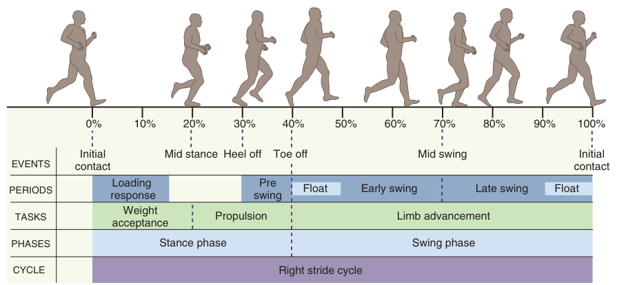
Khác với đi bộ, nơi đại đa số mọi người tiếp xúc ban đầu với mặt đất bằng gót chân, chạy có tính biến đổi cao hơn trong vấn đề này. Bộ phận của bàn chân tiếp xúc ban đầu với mặt đất được gọi là kiểu tiếp đất (foot strike), và có thể xảy ra theo ba cách cụ thể là: tiếp đất bằng gót (rearfoot strike), tiếp đất bằng giữa bàn chân (midfoot strike), và tiếp đất bằng trước bàn chân (forefoot strike). Vị trí của tâm áp lực trên bàn chân hoặc giày đặc trưng cho kiểu tiếp đất cụ thể.23 Khi không có dữ liệu về tâm áp lực, tuy nhiên, kiểu tiếp đất có thể được xác định bằng quan sát trực quan qua video tốc độ cao.2,66 Điều thú vị là, có vẻ như nhiều vận động viên chạy không thể tự đánh giá chính xác kiểu tiếp đất của mình, đặc biệt là những người cho rằng một cách sai lầm họ tiếp xúc trước tiên với mặt đất bằng giữa bàn chân hoặc trước bàn chân.41 Kiểu tiếp đất có thể ảnh hưởng đáng kể đến động học khớp chi dưới trong khi chạy. Ví dụ, một vận động viên chạy dùng kiểu tiếp đất bằng trước bàn chân sẽ có mức gập bàn chân xuống (plantar flexion)
và gập gối lớn hơn ở thời điểm tiếp xúc ban đầu so với kiểu tiếp đất bằng gót. Vì kiểu tiếp đất bằng gót hiện diện ở 88–95% vận động viên chạy đường dài,1,62 mô tả về động học khớp sau đây sẽ giả định kiểu tiếp đất được ưa chuộng này, trừ khi có
ghi chú khác.
Trong khi chạy, chuyển động góc trên mặt phẳng sagittal xảy ra ở toàn bộ thân mình,68 mặc dù trục xoay trong–ngoài thường được giả định là đi qua khớp thắt lưng–cùng.
Được mô tả là gập và duỗi thân mình, góc của thân mình được xác định so với mặt phẳng thẳng đứng thay vì so với một phân đoạn cơ thể khác. Vị trí trung tính (0 độ) trùng với phương thẳng đứng, trong đó gập thân mình đề cập đến sự xoay theo hướng trước, và duỗi thân mình chỉ sự xoay theo hướng sau.
Trong suốt chu kỳ sải, thân mình gập và duỗi khoảng 5–10 độ, mặc dù trung bình nó nằm trong khoảng 2–13 độ gập. Gập thân mình là nhỏ nhất ở thời điểm tiếp xúc ban đầu và đạt giá trị cực đại ngay sau đứng giữa. Khi tốc độ chạy tăng lên, thân mình giữ tư thế gập hơn ở thời điểm tiếp xúc ban đầu, nhưng tổng biên độ gập và duỗi trong suốt chu kỳ sải không tăng.103 30–40% của chu kỳ sải, tương ứng, thay đổi rất nhiều theo tốc độ chạy. Đung đưa giữa xảy ra ở giữa pha đung đưa, khoảng 70% chu kỳ sải, khi đầu gối của chi đang đung đưa đi ngang qua đầu gối của chi đứng đối bên.
Các giai đoạn của chu kỳ sải chạy bao gồm đáp ứng tải, đung đưa trước, đung đưa sớm, và đung đưa muộn (xem Hình 16.1). Đáp ứng tải chiếm 15% đầu tiên của chu kỳ sải, giữa tiếp xúc ban đầu và điểm gập gối cực đại. Trong giai đoạn này chi phải dần dần chịu và hấp thụ trọng lượng của cơ thể. Vào cuối đáp ứng tải, trọng tâm cơ thể đạt vị trí thấp nhất theo phương thẳng đứng. Đung đưa trước là từ lúc nhấc gót đến lúc nhấc ngón chân, khi các cơ của chi dưới sinh ra năng lượng cơ học để đẩy. Đung đưa sớm đề cập đến nửa đầu của pha đung đưa, từ nhấc ngón chân đến đung đưa giữa. Đung đưa muộn là phần còn lại của pha đung đưa, từ đung đưa giữa đến lần tiếp xúc ban đầu kế tiếp.
Các giai đoạn của chu kỳ sải chạy (Periods of Running Stride Cycle)
Bảng 16.1 — Thuật ngữ thông thường định nghĩa các phân chia nhỏ của chu kỳ sải chạy: các Pha, Sự kiện, và Phần trăm của chu kỳ sải.
Các sự kiện của chi đối bên | Các pha của chi đối bên | Đứng | Tiếp xúc ban đầu | Đung đưa | Đứng giữa | Đung đưa giữa | Nhấc gót | Đung đưa | Nhấc ngón chân | Tiếp xúc ban đầu | Đứng | Đung đưa giữa | Đứng giữa | Nhấc gót | Nhấc ngón chân | Đung đưa | Đứng | Tiếp xúc ban đầu
Có nhiều điểm tương đồng về chuyển động khớp giữa đi bộ và chạy. Nhìn chung, kiểu mẫu động học tổng thể là như nhau, trong khi độ lớn và thời điểm của chuyển động thì khác biệt. Những khác biệt này phần lớn là do sự gia tăng tốc độ di chuyển, từ chạy bộ chậm đến chạy nước rút tối đa. Các kỹ thuật phân tích chuyển động tinh vi được dùng để đo khách quan động học của chạy tương tự như các kỹ thuật dùng khi đi bộ (xem Chương 15). Trong trường hợp không có công nghệ này, như thường thấy ở hầu hết các môi trường lâm sàng, các nhà lâm sàng thường dựa vào quan sát trực quan trực tiếp bệnh nhân của mình để đánh giá các đặc điểm chạy. Vì vận tốc góc tại các khớp chi dưới khá cao và thường là những khu vực quan tâm, việc quan sát lâm sàng bằng mắt đối với người chạy nên được thực hiện từ một bản ghi video, cho phép làm chậm chuyển động.
khoảng 5 độ.68 Trong suốt chu kỳ sải chạy, khung chậu thể hiện tư thế nghiêng về trước trung bình 15 đến 20 độ,103 lớn hơn 11 độ nghiêng về trước hiện diện khi đứng. Sau tiếp xúc ban đầu, khung chậu nghiêng về sau cho đến khoảng 10% chu kỳ sải, sau đó khung chậu nghiêng về trước, đạt cực đại tại thời điểm nhấc ngón chân.
Chu kỳ chuyển động này được lặp lại trong pha đung đưa do các yêu cầu đặt lên khung chậu từ chi đối bên trong pha đứng của chi đó.
Khớp háng được gập khoảng 35 độ tại thời điểm tiếp xúc ban đầu, và sự gập này được duy trì hoặc tăng nhẹ trong 10% đầu của chu kỳ sải (xem Hình 16.2B và Video 16.1). Sau giai đoạn gập ban đầu này, khớp háng duỗi ra trong suốt phần còn lại của pha đứng, đạt mức duỗi háng cực đại 0–5 độ gần lúc nhấc ngón chân. Khớp háng gập trong đung đưa sớm để đưa chi tiến về phía trước, rồi chuyển ngược sang duỗi trước lần tiếp xúc ban đầu kế tiếp nhằm giảm thiểu mất tốc độ chạy. Mặc dù gập háng cực đại tăng lên khi tốc độ chạy tăng trong dải thấp, nhưng không tăng ở tốc độ lớn hơn 80% nỗ lực chạy nước rút tối đa.
Dựa trên quan sát trực quan thông thường, vị trí của đùi có thể gợi ý sự duỗi háng lớn hơn vừa mô tả; tuy nhiên, đó là một đánh giá không chính xác. Sự xoay của khớp háng trên mặt phẳng sagittal được xác định bởi vị trí của đùi so với khung chậu. Vì vậy, vị trí nghiêng trước–sau của khung chậu sẽ ảnh hưởng đến góc khớp háng. Một ví dụ rõ ràng là gần lúc nhấc ngón chân, khi khung chậu nghiêng về trước cực đại, dẫn đến mức duỗi háng thực tế nhỏ hơn mức biểu kiến chỉ dựa trên vị trí của đùi so với phương thẳng đứng.
Khớp gối thể hiện kiểu chuyển động hai đỉnh trong chu kỳ sải, một trong pha đứng và một trong pha đung đưa (xem Hình
16.2C). Khớp gối được gập giữa 10 và 20 độ tại thời điểm tiếp xúc ban đầu, đạt góc gập cực đại 45–50 độ gần đứng giữa. Sự gập gối này trong đáp ứng tải đóng vai trò quan trọng trong việc làm chậm sự đi xuống của trọng tâm cơ thể.
Khớp gối duỗi ra trong suốt nửa sau của pha đứng, đạt góc gập nhỏ nhất 20 độ ngay trước lúc nhấc ngón chân. Kiểu chuyển động này lặp lại trong pha đung đưa, nhưng với góc gập cực đại lớn hơn nhiều, 100–120 độ xảy ra gần đung đưa giữa (70% của chu kỳ dáng đi). Mức gập gối này trong pha đung đưa làm giảm mô-men quán tính khối lượng của chi, bằng cách đưa trọng tâm của cẳng chân và bàn chân lại gần trục xoay của khớp háng. Nhờ đó, năng lượng cần thiết để đưa chi đang đung đưa tiến về trước được giảm bớt.
Theo giả định về kiểu tiếp đất bằng gót, khớp cổ chân (khớp talocrural) được đặt ở 0–5 độ gập lòng cổ chân (dorsiflexion) tại thời điểm tiếp xúc ban đầu (xem Hình 16.2D). (Theo cách mô tả truyền thống, một góc cẳng chân–bàn chân 90 độ được coi là 0 độ gập lòng cổ chân.) Sau đó cổ chân gập lòng cổ chân đến mức cực đại 30 độ gần đứng giữa, do xương chày tiến lên phía trên bàn chân được cố định trên mặt đất. Trong suốt đung đưa trước, cổ chân gập bàn chân xuống để sinh công suất để đẩy, đạt mức cực đại 10–20 độ gập bàn chân xuống ngay sau lúc nhấc ngón chân. Trong suốt đung đưa sớm,
Sự xoay của khung chậu trên mặt phẳng sagittal, thường được gọi là nghiêng, xảy ra theo hướng trước và sau (Hình 16.2A).
hướng xoay của một điểm trên các mào chậu xác định hướng của sự nghiêng. Tương tự như thân mình, góc của khung chậu được xác định so với một mặt phẳng thẳng đứng. Hai dao động chuyển động xảy ra trong một chu kỳ sải chạy, với tổng biên độ chuyển động
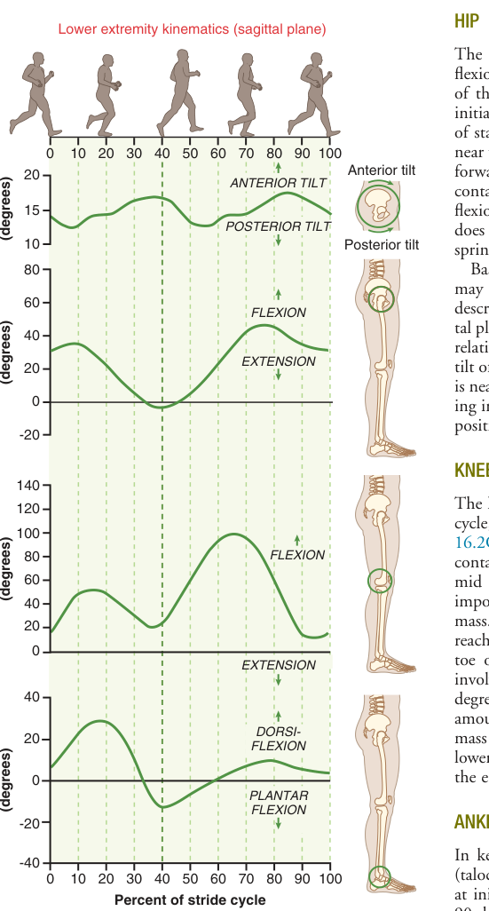
ở nữ giới hơn nam giới,37,104 và có xu hướng tăng theo tốc độ chạy.26 Trong phần còn lại của pha đứng, khớp háng dạng ra và giữ như vậy trong đung đưa sớm, trở về tư thế khép vào trong đung đưa muộn và lần tiếp đất kế tiếp.
Chuyển động của khung chậu ảnh hưởng lớn đến chuyển động của khớp háng trên mặt phẳng frontal trong khi chạy, và thể hiện rõ ràng trong thời điểm của các đỉnh. Ví dụ, khép háng cực đại và nghiêng đối bên của khung chậu xảy ra đồng bộ gần đứng giữa
Tương tự, các xoay trên mặt phẳng frontal của khớp háng xảy ra trong pha đung đưa trùng hợp với các xoay của khung chậu để đáp ứng chi đứng đối bên. Mặc dù các kiểu mẫu và thời điểm chuyển động tương tự hiện diện, biên độ chuyển động lớn hơn tại khớp háng cho thấy chuyển động trên mặt phẳng frontal của xương đùi cũng hiện diện trong khi chạy.
Nhiều sự chú ý đã được dành cho động học mặt phẳng frontal của khớp háng trong pha đứng vì liên quan đến các chấn thương chi dưới do chạy. Đặc biệt, khép háng cực đại quá mức trong pha đứng của chạy (≈12 độ)
đã được liên kết với nguy cơ cao hơn phát triển đau khớp patellofemoral.86 Điều đáng chú ý, các vận động viên chạy bị đau khớp patellofemoral đã được hướng dẫn giảm khép háng quá mức trong khi chạy, dẫn đến giảm đáng kể các triệu chứng của họ.87
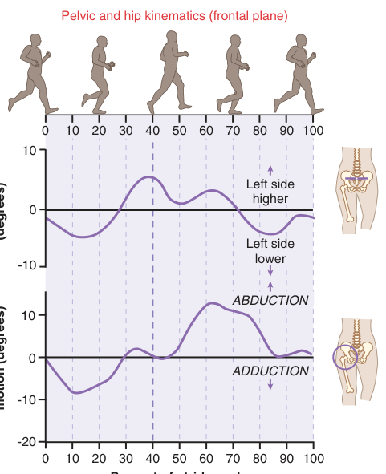
cổ chân gập lòng cổ chân với vận tốc góc chậm, rồi dần dần gập bàn chân xuống để đưa bàn chân trở về tư thế gập lòng nhẹ tại lần tiếp xúc ban đầu kế tiếp.
Chuyển động tại khớp metatarsophalangeal (MTP) thứ nhất khó đo trong khi chạy vì tốc độ chuyển động và sự che khuất do việc sử dụng giày dép. Tuy nhiên, đã có những nỗ lực định lượng chuyển động tại khớp này trong khi chạy.74,125 Tại thời điểm tiếp xúc ban đầu, khớp MTP thứ nhất được duỗi 10 độ nhưng trở về vị trí trung tính cho đến lúc nhấc gót. Tại lúc nhấc gót, khớp MTP thứ nhất duỗi đến vị trí cực đại 30 độ ngay trước lúc nhấc ngón chân, với mức duỗi lớn hơn xảy ra khi chạy nhanh hơn hoặc khi tăng tốc. Trong suốt pha đung đưa, khớp MTP thứ nhất giữ vị trí trung tính.
Mặc dù chạy có chiều dài sải lớn hơn đi bộ, cần ít sự duỗi hơn của khớp MTP thứ nhất tại lúc nhấc ngón chân (xem lại phần được giải thích bởi vị trí tương ứng của khớp gối và cổ chân.
Góc gập gối tại lúc nhấc ngón chân lớn hơn khi đi bộ (35 độ) so với khi chạy (20–25 độ), với các góc duỗi háng và gập bàn chân xuống tương tự. Mức gập gối nhỏ hơn tại lúc nhấc ngón chân trong khi chạy, so với đi bộ, sẽ cần ít sự duỗi hơn của khớp MTP thứ nhất.
Sự xoay của thân mình trên mặt phẳng frontal, thường được gọi là gập sang bên, được giả định xảy ra quanh một trục trước–sau nằm tại khớp thắt lưng–cùng. Được đo so với một mặt phẳng thẳng đứng, tổng biên độ chuyển động của thân mình trên mặt phẳng frontal khi chạy là khoảng 10 độ, với 5 độ mỗi hướng.103 Gập sang bên cực đại trùng với lần tiếp đất ban đầu cùng bên.
Sự xoay hoặc nghiêng sang bên của khung chậu trên mặt phẳng frontal được đo so với mặt phẳng ngang, với vị trí trung tính (0 độ) xảy ra khi các mào chậu trái và phải ở mức ngang nhau. Khung chậu nghiêng sang bên khoảng 10 độ trên mặt phẳng frontal trong một chu kỳ sải chạy (Hình 16.3A).68 Tại thời điểm tiếp xúc ban đầu, mào chậu ở phía chi đứng hơi cao hơn mào chậu đối bên, với tư thế này thường được gọi là nghiêng đối bên; nghĩa là, khung chậu nghiêng sang bên về phía đối bên (pha đung đưa). Nghiêng đối bên tăng trong đáp ứng tải, đạt vị trí cực đại ngay trước đứng giữa, sau đó hướng xoay đảo ngược. Khung chậu nghiêng sang bên về phía chi đứng (nghiêng cùng bên), đạt vị trí cực đại tại lúc nhấc ngón chân. Chu kỳ chuyển động này lặp lại trong pha đung đưa do các yêu cầu đặt lên khung chậu từ chi đối bên trong pha đứng của chi đó.
Tại thời điểm tiếp xúc ban đầu, khớp háng ở tư thế khép nhẹ và tiếp tục khép cho đến khi đạt giá trị cực đại (8–10 độ) ngay trước đứng giữa (xem Hình 16.3B và Video 16.2). Khép háng cực đại lớn hơn khoảng 3 độ các chuyển động trên mặt phẳng sagittal và frontal trong khi chạy, thì không phù hợp cho các chuyển động trên mặt phẳng ngang.
Biên độ của các chuyển động trên mặt phẳng ngang nhỏ hơn nhiều ở phần dưới so với phần trên của thân mình. Điều này một phần là do các hạn chế khác biệt vốn có của các khớp mào (apophyseal) ở vùng thắt lưng và ngực (xem lại Chương 9).
Hơn nữa, các chuyển động trên mặt phẳng ngang của thân mình dưới bị khung chậu và chi dưới ràng buộc chặt hơn, cả hai đều chuyển động ngược hướng với chuyển động của thân mình và chi trên. Vì vậy, các chuyển động ngang của vùng dưới và vùng trên của thân mình thường được đo riêng biệt.
Sự xoay trên mặt phẳng ngang của thân mình dưới (nghĩa là, cột sống thắt lưng) thể hiện một dao động dạng sin cho mỗi chu kỳ sải chạy, với mức xoay bằng nhau sang trái và sang phải. Xoay sang phải cực đại xảy ra ngay trước lần tiếp xúc ban đầu của chi phải, với sự xoay liên tục sang trái diễn ra trong suốt pha đứng.105 Xoay sang trái cực đại đạt được ngay sau lúc nhấc ngón chân của chi phải, với sự xoay sang phải diễn ra trong suốt pha đung đưa. Tổng biên độ chuyển động là khoảng 20 độ, với khoảng 10 độ mỗi hướng. Tuy nhiên, biên độ chuyển động này đo bằng các dấu trên da có thể bị đánh giá cao hơn; các giá trị biên độ chuyển động thu được bằng các chốt gắn phẫu thuật vào xương cho thấy tổng độ lớn vào khoảng 5 độ.68 Vì vậy, tổng sự xoay trên mặt phẳng ngang cần thiết của thân mình dưới trong khi chạy nằm thoải mái trong giới hạn sinh lý của cột sống thắt lưng. Chuyển động trên mặt phẳng ngang của thân mình trên (nghĩa là, cột sống ngực)
thể hiện kiểu chuyển động giống như thân mình dưới, nhưng với tổng biên độ chuyển động lớn gấp ba lần.68
Chuyển động của khớp gối trên mặt phẳng frontal trong khi chạy là rất nhỏ, không nhất quán, và khó gán cho một hướng chuyển động. Các phép đo động học thu được từ các chốt cắm vào xương đùi và xương chày đã cho thấy tổng chuyển động trên mặt phẳng frontal khoảng 5 độ trong pha đứng.97 Một số nghiên cứu đã cố gắng xác định chuyển động trên mặt phẳng frontal tại khớp gối bằng các dấu phản quang gắn trên da
37,71,93; tuy nhiên, cần thận trọng khi giải thích các dữ liệu này vì có sự phù hợp kém giữa chuyển động khớp gối trên mặt phẳng frontal thu được từ dấu trên da và từ dấu trên xương.97
Nhất quán với Chương 15, chuyển động trên mặt phẳng frontal của dạng ra và xoay vào tại khớp subtalar được coi là đại diện cho các chuyển động tổng quát hơn là xoay bàn chân vào trong (pronation) và xoay bàn chân ra ngoài (supination), tương ứng. Tại thời điểm tiếp xúc ban đầu, vị trí của khớp subtalar thay đổi đáng kể giữa các cá nhân, từ 5 độ xoay vào đến 10 độ dạng ra.71,96 Mặc dù có sự biến đổi về vị trí tại thời điểm tiếp xúc ban đầu, một kiểu mẫu chuyển động chung vẫn hiện diện trong suốt pha đứng (Hình 16.4). Khớp subtalar dạng ra trong pha đứng ban đầu, đạt dạng ra cực đại tại 16% chu kỳ sải (40% pha đứng). Góc dạng ra cực đại có thể nằm trong khoảng 5 đến 20 độ và phần lớn liên quan đến vị trí của khớp subtalar tại thời điểm tiếp xúc ban đầu, sao cho tổng biên độ từ tiếp xúc ban đầu đến dạng ra cực đại là khoảng 10 độ.71 Trong phần còn lại của pha đứng, khớp subtalar xoay vào để đạt vị trí gần như giống hệt vị trí lúc tiếp xúc ban đầu tại lúc nhấc ngón chân.
Trong khi coi thân mình là một phân đoạn động học cứng duy nhất có thể phù hợp khi đo các chuyển động trên các mặt phẳng sagittal và frontal,
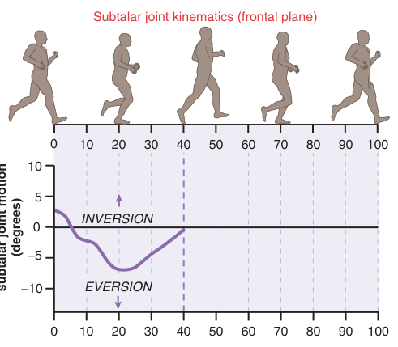
Việc đánh giá cơ chế chạy của một cá nhân, bằng máy quay video hoặc công nghệ khác, thường được thực hiện trong lúc chạy trên máy chạy bộ hoặc chạy trên mặt đất. Trong môi trường lâm sàng, sự lựa chọn giữa hai cách này thường được quyết định dựa trên tính thực tiễn và tính khả thi. Ưu điểm chính của việc phân tích trên mặt đất là tính hợp lệ sinh thái. Nghĩa là, hầu hết các vận động viên chạy phần lớn quãng đường của họ trên mặt đất chứ không phải trên máy chạy bộ, khiến chạy trên mặt đất trở thành môi trường tự nhiên hơn. Đây là một cân nhắc quan trọng, vì phân tích cần ghi lại được cơ chế chạy điển hình của người chạy để xác định xem nó có thể góp phần gây chấn thương hay không. Tuy nhiên, một số vấn đề về hậu cần khiến chạy trên mặt đất trở nên khó khăn cho việc phân tích cơ chế chạy, bao gồm duy trì tốc độ chạy không đổi; xác định vị trí của người chạy so với máy quay để tránh sai số phối cảnh và thị sai; và ghi lại một số lượng đủ lớn chu kỳ sải để đại diện cho cơ chế điển hình của người chạy. Mặc dù việc sử dụng máy chạy bộ có thể giải quyết tất cả những vấn đề trên, cần cân nhắc thêm các yếu tố như người chạy thấy thoải mái trên máy; độ cứng đủ của bàn máy để mô phỏng chạy trên mặt đất; và công suất động cơ đủ để bảo đảm tốc độ không đổi của băng máy. Mặc dù người ta thường cho rằng sinh cơ học khác biệt rõ rệt khi chạy trên máy so với trên mặt đất, nếu loạt yếu tố nêu trên được giải quyết, các khác biệt nói chung là nhỏ.99
chạy không đung đưa tay làm tăng tỷ lệ tiêu thụ năng lượng trao đổi chất ít nhất 3% so với chạy có đung đưa tay.7 Khi không đung đưa tay, sự xoay trên mặt phẳng ngang của khung chậu tăng lên tới 100%7 là cần thiết để bù đắp mô-men xung lực của các chi dưới. Hoạt động cơ thân mình lớn hơn cần thiết để kiểm soát sự gia tăng xoay khung chậu này, đến lượt nó, mang theo một chi phí trao đổi chất.
Tương tự như đi bộ, chuyển động của khớp vai trên mặt phẳng sagittal khi chạy có dạng sin và lệch pha với khớp háng. Vì vậy, trong suốt pha đứng, vai gập trong khi háng cùng bên duỗi, với kiểu ngược lại xảy ra trong pha đung đưa. Tại thời điểm tiếp xúc ban đầu, vai được duỗi khoảng 40 độ rồi dần dần gập trong pha đứng đến khoảng 10 độ gập gần lúc nhấc ngón chân. Sau đó vai trở lại mức duỗi 40 độ trong pha đung đưa để chuẩn bị cho lần tiếp xúc ban đầu kế tiếp. Độ lớn chuyển động của vai khá biến đổi giữa các cá nhân và bị ảnh hưởng bởi chiều dài sải chạy. Nghĩa là, sải càng dài thì chuyển động của vai càng lớn.
Trong suốt chu kỳ sải chạy, các khớp khuỷu được giữ ở mức gập gần 90 độ. Có thể thấy một số chuyển động, nhưng nhìn chung dưới 30 độ. Bằng cách giữ khuỷu gập, trọng tâm của chi trên được đặt gần hơn với trục trong–ngoài của khớp vai, từ đó làm giảm mô-men quán tính khối lượng của chi.
Sự xoay trong mặt phẳng ngang của khung chậu phần lớn không cùng pha với sự xoay của thân. Khi tiếp xúc ban đầu của chi phải, gai chậu trước trên bên trái (ASIS) nằm phía trước gai chậu trước trên bên phải và tiếp tục xoay về phía trước, đạt mức tối đa ngay trước giữa pha đứng. So với chi phải, khung chậu đang xoay theo chiều kim đồng hồ khi nhìn từ trên xuống, hay thường được gọi là xoay ngoài của khung chậu (Hình 16.5A). Sau đó khung chậu xoay vào trong trong suốt phần còn lại của pha đứng, đạt vị trí trung tính khi ngón chân rời đất. Sự xoay vào trong tối đa (tức là ASIS bên trái di chuyển ra sau so với ASIS bên phải) xảy ra gần giữa pha đung đưa, tương ứng với giữa pha đứng của chi đối bên. Khung chậu xoay 10–15 độ trong mặt phẳng ngang, với lượng xoay vào trong và xoay ra ngoài bằng nhau.105 Vị trí của khung chậu lúc tiếp xúc ban đầu khi chạy khác nhiều so với vị trí của nó khi đi bộ, và sự tương phản này đáng được nhấn mạnh. Nhờ có giai đoạn hai chân chịu lực khi đi bộ, khung chậu được xoay vào trong (ASIS đối bên nằm phía sau ASIS của chi đang tiếp xúc ban đầu) tại thời điểm chạm đất để tạo ra chiều dài bước chân hiệu quả hơn. Trong khi chạy, tuy nhiên, khung chậu không còn phải đóng vai trò là điểm tựa xoay để kéo dài bước chân, vì chi đối bên không được cố định vào mặt đất. Thay vào đó, tại thời điểm tiếp xúc ban đầu, khung chậu được xoay ra ngoài (ASIS đối bên nằm phía trước ASIS của chi đang tiếp xúc ban đầu) nhằm giảm thiểu sự mất tốc độ chạy và hỗ trợ sự tiến lên của chi đang đung đưa.103
Các ước tính về sự xoay trong mặt phẳng ngang của khớp hông có xu hướng khác nhau giữa các nghiên cứu và giữa các cá nhân; tuy nhiên, có thể rút ra một số kết luận chung. Thứ nhất, biên độ tổng của chuyển động hông trong suốt chu kỳ sải chạy xấp xỉ 10 độ (xem Hình 16.5B).
Thứ hai, một số thay đổi hướng với biên độ nhỏ xảy ra chủ yếu trong pha đung đưa, và ý nghĩa chức năng của chúng chưa được biết. Cuối cùng, bất chấp những dao động thường xuyên này, góc xoay hông trung bình trong toàn bộ chu kỳ sải chạy gần 0 độ hoặc ở vị trí trung tính.
Sự xoay trong mặt phẳng ngang của hông trong giai đoạn đáp ứng tải trọng dường như có tính biến đổi nhất. Một số nghiên cứu cho rằng hông được xoay ra ngoài lúc tiếp xúc ban đầu rồi xoay vào trong suốt giai đoạn đáp ứng tải trọng,104 trong khi những nghiên cứu khác lại quan sát thấy hông được xoay vào trong lúc tiếp xúc ban đầu với sự xoay tiếp theo rất ít trong giai đoạn đáp ứng tải trọng.26,37
Tương tự như chuyển động của gối trong mặt phẳng frontal, các phép đo chính xác về chuyển động của gối trong mặt phẳng ngang khi chạy đòi hỏi các điểm đánh dấu gắn trực tiếp vào xương. Những phép đo này đã chứng minh rằng gối xoay vào trong 5–10 độ trong nửa đầu của pha đứng, với mức độ xoay ra ngoài tương tự trong nửa sau của pha đứng.97 Mặc dù kiểu hình nhìn chung nhất quán giữa các cá nhân, biên độ chuyển động có thể thay đổi đáng kể, với một số người chạy không cho thấy chuyển động đáng kể nào.37,97
Vung tay của chi trên trong khi chạy mang lại những lợi ích quan trọng về trao đổi chất và sinh cơ học. Ví dụ,
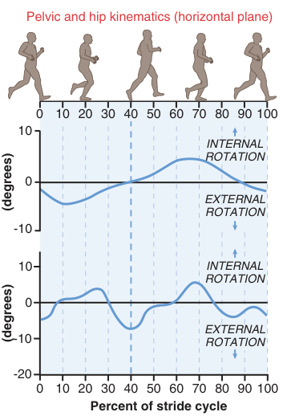
tiêu thụ oxy ổn định), có sự biến đổi lớn giữa các cá nhân. Ngay cả trong số những người chạy được huấn luyện với mức độ thể lực hiếu khí tương tự, hiệu quả chạy vẫn thay đổi khoảng 20% khi chạy ở cùng một tốc độ.122 Mặc dù các yếu tố như tuổi, giới tính và môi trường có thể góp phần vào sự biến đổi này,76 một phần đáng kể của sự biến đổi được cho là kết quả của sự khác biệt về cấu trúc cơ thể và cơ chế chạy. Ví dụ, những người nặng cân hơn có thể có hiệu quả chạy cao hơn trên mỗi đơn vị khối lượng cơ thể (mL/kg/min)
so với những người nhẹ cân hơn.123 Tương tự, những người có ít khối lượng tập trung về phía chi dưới xa hơn có khả năng có hiệu quả chạy cao hơn, vì cần ít công cơ hơn để tăng tốc chi dưới.81
Các cơ chế chạy liên quan đến hiệu quả chạy kém bao gồm độ dịch chuyển thẳng đứng quá mức của trọng tâm cơ thể,122 vung tay quá mức,122 và lực phản ứng từ mặt đất hướng ra sau tăng lên trong nửa đầu của pha đứng.61
Mặc dù người chạy thường xem xét các yếu tố này trong quá trình huấn luyện, mối liên hệ của chúng với hiệu quả chạy nhìn chung chỉ ở mức trung bình và không được quan sát nhất quán trong các nghiên cứu. Hơn nữa, các chuyển động trong mặt phẳng sagittal của hông, gối và cổ chân trong chu kỳ đứng không có mối quan hệ rõ ràng với hiệu quả chạy.61
Sự biến đổi về hiệu quả chạy giữa các cá nhân dường như không được giải thích bởi một tập hợp nhỏ các yếu tố sinh cơ học, mà có thể liên quan đến sự tương tác của nhiều yếu tố.122 Cũng cần nhớ rằng phần lớn các nghiên cứu tìm hiểu chi phí năng lượng của việc chạy đều liên quan đến những người chạy được huấn luyện tốt hoặc chạy ưu tú từ một nhóm khá đồng nhất.101 Do đó, những phát hiện này có thể có khả năng khái quát hóa hạn chế đối với quần thể người chạy giải trí đa dạng hơn.
Tất cả các cơ của chi dưới và thân đều hoạt động trong các giai đoạn khác nhau của chu kỳ sải chạy. Đo hoạt động của một cơ bằng điện cơ đồ (EMG) cung cấp manh mối về vai trò của cơ đó trong việc kiểm soát động học tương ứng (xem lại chủ đề EMG trong Chương 3).
Các điện cực điện cơ đặt trên bề mặt da được sử dụng thường xuyên để ghi lại hoạt động của các cơ lớn, nông, trong khi cần điện cực nội cơ (dây mảnh) để đánh giá hoạt động của các cơ sâu hơn. Cách tiếp cận sau có độ khó kỹ thuật cao, giải thích cho sự thiếu hụt dữ liệu EMG trong tài liệu về nhiều cơ sâu (ví dụ, các cơ xoay ngoài sâu của hông); tuy nhiên, điều này không nên được hiểu là dấu hiệu cho thấy tầm quan trọng tương đối của chúng đối với việc chạy là thấp.
Ngược lại, những cơ sâu này có khả năng đóng vai trò hiệp đồng quan trọng với các cơ lớn hơn, nông hơn, giúp ổn định và kiểm soát chuyển động của thân và các khớp chi dưới.
Điện cơ đồ cho phép xác định kiểu hoạt động của các cơ trong suốt một chu kỳ sải chạy. EMG cho biết khi nào một cơ đang “bật” hay “tắt” (thời gian) và mức độ kích hoạt tương đối của nó (sự dẫn truyền thần kinh) trong toàn bộ chu kỳ sải chạy. Tương tự như khi đi bộ, tiêu chuẩn tham chiếu được dùng để xác định mức kích hoạt tương đối của một cơ thường là cường độ tín hiệu EMG tối đa của nó trong chu kỳ sải chạy.
Hình 16.6A và 16.6B dùng tiêu chuẩn này cho tín hiệu EMG minh họa của mỗi cơ. Mặc dù có thể xác định cường độ hoạt động của cơ, điều này không nhất thiết tương đương với lượng lực cơ. Trong các chuyển động như chạy, cần các mô hình máy tính thần kinh-cơ-xương phức tạp để ước tính lực cơ, trong đó EMG chỉ là một trong các phép đo thường dùng được đưa vào các mô hình này.
Sự dịch chuyển của trọng tâm cơ thể — Tương tự như khi đi bộ, trọng tâm cơ thể (CoM) di chuyển theo hướng thẳng đứng và sang hai bên khi chạy, mặc dù thời điểm và biên độ của các chuyển động này rất khác. Theo hướng thẳng đứng, CoM ở độ cao thấp nhất vào giữa pha đứng của kiểu chạy, và ở độ cao cao nhất vào giữa đoạn lơ lửng của pha đung đưa sớm. Điều này rất khác với khi đi bộ, khi CoM ở độ cao tối đa vào giữa pha đứng
và ở độ cao thấp nhất vào điểm giữa của giai đoạn hai chân chịu lực. Tổng độ dịch chuyển thẳng đứng của CoM khi chạy dao động từ 5 đến 10 cm, thay đổi đáng kể theo tốc độ chạy, nhịp bước, kinh nghiệm và hiệu quả trao đổi chất.43,47,77,122
Chuyển động sang hai bên của CoM phần lớn phản ánh độ rộng bước chân (tức là chuyển động sang hai bên lớn hơn khi độ rộng bước chân lớn hơn). Khi chạy, độ rộng bước chân gần bằng không, dẫn đến chuyển động sang hai bên tối thiểu của CoM.5 Khác với đi bộ, điều này gợi ý nhu cầu rất ít về kiểm soát chủ động thăng bằng ngang khi chạy.6
Độ dịch chuyển thẳng đứng của CoM cơ thể khi chạy dẫn đến những biến động năng lượng cơ học rất khác so với khi đi bộ. Khi chạy, năng lượng thế (phản ánh vị trí thẳng đứng của CoM cơ thể) ở mức tối thiểu vào giữa pha đứng và ở mức tối đa vào giữa đoạn lơ lửng của pha đung đưa sớm.
Tương tự, năng lượng động khi chạy (chủ yếu là hàm của vận tốc thẳng đứng của cơ thể) cũng ở mức tối thiểu vào giữa pha đứng, với giá trị cực đại xảy ra gần giữa đoạn lơ lửng của pha đung đưa sớm. Do đó, năng lượng thế và năng lượng động cùng pha trong khi chạy: một sắp xếp chỉ hiệu quả 5% trong việc bảo tồn năng lượng cơ học cần thiết để nâng và tăng tốc CoM.35 Thay vào đó, cơ thể khi chạy phụ thuộc nhiều hơn vào sự tích trữ và giải phóng năng lượng trong các mô đàn hồi, chẳng hạn như gân, để bảo tồn hiệu quả năng lượng cơ học.
Mối quan hệ giữa năng lượng trao đổi chất (đo bằng mức tiêu thụ oxy so với khối lượng cơ thể) và tốc độ là rất khác biệt đối với chạy so với đi bộ. Khi được biểu thị tương đối theo quãng đường đã đi (mL/kg/m), tồn tại mối quan hệ hình chữ U giữa tốc độ đi bộ và chi phí năng lượng, từ đó cho phép xác định một tốc độ đi bộ tối ưu (xem Hình 15.26).
Tuy nhiên, khi chạy, chi phí năng lượng để chạy một quãng đường nhất định lại rất giống nhau bất chấp tốc độ, cho thấy sự duy trì hiệu quả của chuyển động. Người ta vẫn chưa biết chính xác điều này được thực hiện như thế nào, mặc dù một số yếu tố đã được đề xuất bao gồm điều chỉnh chiều dài sải hoặc nhịp bước và các nguồn công suất cơ học.20,24 Hiệu quả chạy, được định nghĩa là nhu cầu năng lượng trao đổi chất cho một tốc độ chạy dưới cực đại nhất định (và được đo bằng tốc độ của
Đối với nhiều chuyển động của con người, giai đoạn kích hoạt của một cơ gần như trùng khớp chính xác với một chuyển động khớp cụ thể.
Tuy nhiên, khi chạy, một cơ thường hoạt động tốt trước cả chức năng chính định của nó. Ví dụ, các cơ hoạt động lệch tâm trong giai đoạn đáp ứng tải trọng thường bắt đầu hoạt động vào cuối pha đung đưa (80–100% của chu kỳ sải chạy). Với biên độ và tốc độ tải trọng đáng kể trong tiếp xúc ban đầu, hoạt động cơ sớm này giúp cơ đáp ứng tốt hơn với các yêu cầu sắp tới.61 Sự gia tăng hoạt động của cơ trước tiếp xúc ban đầu cho phép lực do cơ tạo ra (và mô-men khớp cùng hấp thụ công suất tương ứng) đạt mức cao hơn sớm hơn so với trường hợp cơ không hoạt động cho đến lúc tiếp xúc ban đầu. Đây là một ví dụ điển hình về hệ thần kinh cơ hình thành kiểu riêng phù hợp với yêu cầu của nhiệm vụ. Trong suốt phần này về Hoạt động Cơ, người đọc được khuyến khích xem các đường EMG trong Hình 16.6A và Hình 16.6B.
Khi chạy, các cơ của thân có vai trò tương tự như khi đi bộ, nhưng vận tốc góc cao hơn, lực phản ứng từ mặt đất lớn hơn và tốc độ cũng như độ sâu của hơi thở lớn hơn đòi hỏi mức độ kích hoạt cao hơn.
Các erector spinae (cơ dựng sống) vượt qua vùng ngực dưới và vùng thắt lưng trên có kiểu kích hoạt hai pha, với mỗi đợt tương ứng với thời điểm tiếp xúc ban đầu của mỗi chi (Hình 16.6A)18,102 Hai đợt hoạt động này kiểm soát động lượng góc hướng về trước của thân so với khung chậu khi bàn chân chạm vào mặt đất cứng không đổi. Cơ dựng sống bên phải và bên trái cho thấy hoạt động đồng thời.
Rectus abdominis (cơ trực bụng) có hai giai đoạn hoạt động rõ rệt, mặc dù cả hai đều có biên độ tương đối thấp. Giai đoạn đầu tiên trước tiếp xúc ban đầu và kéo dài đến 20% của chu kỳ sải chạy.
Giai đoạn thứ hai xảy ra từ 40% đến 70% của chu kỳ sải chạy, tương ứng với nửa đầu của pha đứng của chi đối bên.18 Xét đến mức độ hoạt động thấp và động lượng hướng về trước hiện có của thân, khó có khả năng chính là cơ trực bụng chịu trách nhiệm về tư thế gập phổ biến của thân xuất hiện vào thời điểm này. Thay vào đó, hoạt động của cơ trực bụng được cho là hiệp đồng với các cơ bụng sâu hơn (chẳng hạn như cơ chéo trong và cơ ngang bụng) để kiểm soát và ổn định chuyển động của thân trong mặt phẳng ngang và cung cấp sự hỗ trợ cho các tạng bụng.50
Gluteus maximus (cơ mông lớn) hoạt động trước tiếp xúc ban đầu để bắt đầu duỗi hông và chuẩn bị cho giai đoạn đáp ứng tải trọng (xem lại Hình 16.2B).
Cơ này cho thấy tín hiệu EMG mạnh nhất vào đầu giai đoạn đáp ứng tải trọng, đạt đỉnh giữa 5% và 10% của chu kỳ sải chạy.27,34 Cơ mông lớn hoạt động lệch tâm trong thời gian ngắn sau tiếp xúc ban đầu để làm chậm vận tốc đi xuống của cơ thể. Cơ chuyển sang hoạt động đồng tâm cho đến
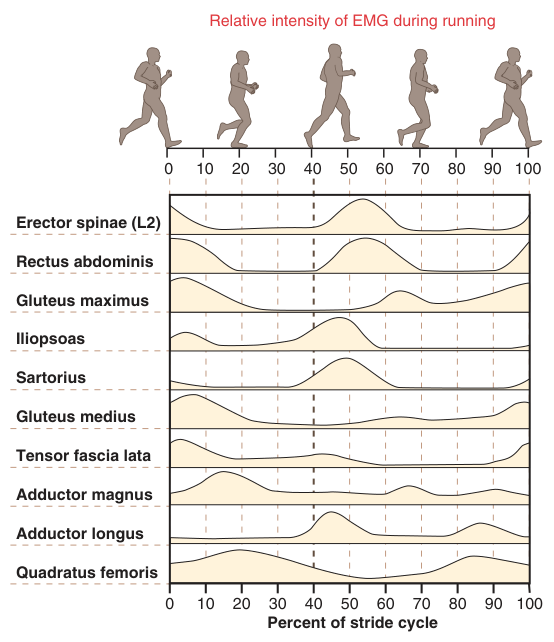
Hình tiếp tục ở trang 716.
(xem lại Hình 16.3), đạt hoạt động cực đại vào 10% của chu kỳ sải chạy, sau đó gluteus medius (cơ mông trung) hoạt động đồng tâm để tạo sự dạng hông trong phần còn lại của giai đoạn hoạt động ở pha đứng. Giai đoạn hoạt động này trong pha đứng tương ứng với việc tạo lực đáng kể của cơ mông trung, và được ước tính vượt quá lực của bất kỳ cơ nào khác vượt qua khớp hông.64 Cơ vẫn không hoạt động trong phần cuối của pha đứng và suốt pha đung đưa cho đến 80% của chu kỳ sải chạy, khi có thể thấy sự gia tăng dần hoạt động để chuẩn bị cho lần chạm đất tiếp theo.
Mặc dù kiểu EMG của gluteus minimus (cơ mông bé) chưa được công bố khi chạy, nhưng các kiểu ghi được khi đi bộ cho thấy kiểu tổng thể tương tự như cơ mông trung.109 Kiểu hoạt động của tensor fascia latae (cơ căng mạc đùi) trong khi chạy, thu được bằng điện cực nội cơ, cho thấy mức hoạt động thấp từ 0% đến 60% của chu kỳ sải chạy.3
Là cơ dạng hông chính (xem lại Chương 12), cơ căng mạc đùi có khả năng hỗ trợ cơ mông trung và cơ mông bé trong việc kiểm soát cơ học mặt phẳng frontal của chi đang đứng.
Thông tin EMG hạn chế có sẵn cho các cơ khép và cơ xoay của hông khi chạy. Adductor magnus (cơ khép lớn) và adductor longus (cơ khép dài) cho thấy hoạt động mức thấp nhìn chung trong phần lớn chu kỳ sải chạy.
Cơ khép lớn cho thấy đỉnh hoạt động chính gần giữa pha đứng, có thể để hỗ trợ duỗi hông.40 Ngược lại, cơ khép dài cho thấy đỉnh hoạt động vào đầu pha đung đưa, nhiều khả năng để hỗ trợ bắt đầu gập hông.18
Quadratus femoris (cơ vuông đùi), một cơ xoay ngoài sâu, cũng nhìn chung hoạt động trong suốt chu kỳ sải chạy nhưng cho thấy hai đợt hoạt động riêng biệt trong pha đứng và cuối pha đung đưa.108 Được xem là một cơ xoay ngoài quan trọng của hông,51 cơ này có khả năng hoạt động lệch tâm để kiểm soát sự xoay vào trong của hông trong giai đoạn đáp ứng tải trọng, cũng như ổn định chỏm xương đùi trong ổ cối trong suốt pha đứng. Trong pha đung đưa muộn, vai trò của cơ vuông đùi là cung cấp sự ổn định khớp trong khi các cơ duỗi hông lớn hơn (ví dụ, nhóm cơ gân kheo) đang tạo ra các mô-men duỗi đáng kể.
Tất cả bốn đầu của cơ tứ đầu đùi (tức là rectus femoris [cơ trực đùi], vastus lateralis [cơ rộng ngoài], vastus intermedius [cơ rộng giữa] và vastus medialis [cơ rộng trong]) cho thấy một đợt hoạt động trước tiếp xúc ban đầu và kéo dài đến 20% của chu kỳ sải chạy
(Hình 16.6B).27,75 Tuy nhiên, các cơ này hoạt động mạnh nhất trong giai đoạn đáp ứng tải trọng để kiểm soát lệch tâm sự gập gối và nâng đỡ trọng tâm cơ thể (xem lại Hình 16.2C).44,75 Cơ trực đùi cho thấy một đợt hoạt động thứ hai từ 40% đến 60% của
chu kỳ sải chạy để hỗ trợ gập hông. Ở 80% của chu kỳ sải chạy, cả bốn thành phần của cơ tứ đầu đùi đều hoạt động để chuẩn bị cho bàn chân chạm đất.
Mỗi cơ trong nhóm hamstrings (cơ gân kheo) cho thấy kiểu kích hoạt tương tự trong suốt chu kỳ sải chạy.18,27,75 Nhóm cơ gân kheo cho thấy mức hoạt động thấp đến trung bình trong suốt pha đứng, vì
chúng góp phần vào sự duỗi hông. Trong pha đung đưa sớm, các cơ về cơ bản không hoạt động, với một đợt hoạt động thứ hai và lớn hơn vào giữa pha đứng (20% của chu kỳ sải chạy) để nâng đỡ cơ thể và tạo sự duỗi hông.44 Cơ không hoạt động trong phần còn lại
của pha đứng và pha đung đưa sớm, nhưng trở lại hoạt động lệch tâm trong pha đung đưa muộn để làm chậm sự gập hông trước khi bắt đầu duỗi hông.18,27,44,64 Độ lớn hoạt động của cơ mông lớn tăng đáng kể
theo tốc độ chạy, tương ứng với yêu cầu lệch tâm tăng lên đặt lên cơ để làm chậm chi đang tiến về phía trước. Đặc biệt, lực cực đại cần thiết từ cơ mông lớn trong pha đung đưa được ước tính tăng gấp 3 khi tốc độ chạy tăng từ 3.5 m/sec lên 7.0 m/sec, và gấp 6 khi tốc độ tăng lên 9.0 m/sec.34
Do đó, sự đóng góp của cơ mông lớn quan trọng hơn nhiều ở những tốc độ chạy thường liên quan đến chạy nước rút so với chạy đường dài.
Sự thay đổi hoạt động của cơ mông lớn khi chạy thường liên quan đến các chấn thương thường gặp liên quan đến chạy, đặc biệt là đau khớp bánh chè-đùi (xem Liên lâm sàng 16.1). Tuy nhiên, hiện tại, tài liệu EMG chưa làm rõ được kiểu hoạt động cơ nào là nhất quán ở những người có và không có chấn thương.10
Cơ khép lớn cho thấy đỉnh hoạt động gần giữa pha đứng.
Với cơ học thuận lợi để tạo mô-men duỗi khi hông đang gập (xem lại Chương 12), cơ khép lớn có khả năng hoạt động để tăng cường mô-men duỗi hông.40,75 Các cơ gân kheo (tức là biceps femoris [cơ nhị đầu đùi], semimembranosus [cơ màng bán],
và semitendinosus [cơ gân bán]) cũng hoạt động trước tiếp xúc ban đầu và duy trì hoạt động đến khoảng 30% của chu kỳ sải chạy.18,27,34,110 Tuy nhiên, đóng góp tương đối của các cơ này vào sự duỗi hông tổng thể trong phần này của chu kỳ sải chạy chỉ bằng khoảng một nửa đóng góp từ cơ mông lớn.34
Các cơ gân kheo gần như không hoạt động cho đến 70% của chu kỳ sải chạy, đạt đỉnh hoạt động tổng thể ở 85% đến 90% của chu kỳ sải chạy.
Đợt hoạt động lệch tâm này là yếu tố chính góp phần làm chậm sự gập hông trước khi bắt đầu duỗi hông trước lần tiếp xúc ban đầu tiếp theo.34
Iliopsoas (cơ chậu hông) hoạt động chủ yếu trước và sau lúc ngón chân rời đất, tương ứng với 30% đến 60% của chu kỳ sải chạy.18 Trước lúc rời ngón chân, cơ chậu hông hoạt động lệch tâm, ngay sau đó là hoạt động đồng tâm ngay sau khi rời ngón chân và chuyển sang pha đung đưa sớm.64
Kiểu kích hoạt lệch tâm ngay trước một sự co đồng tâm này được gọi là chu kỳ “kéo dài-rút ngắn” (stretch-shortening cycle), và tạo ra lực co tăng cường nhờ tác động kết hợp của phản xạ kéo dài và sự tích trữ năng lượng đàn hồi trong gân.60,94,113 Đỉnh hoạt động của cơ chậu hông xảy ra ngay sau khi rời ngón chân,
tương ứng với lực cực đại ước tính của cơ, khởi động sự gập hông và tăng tốc chi về phía trước.64 Khi tốc độ chạy tăng, độ lớn hoạt động và lực đầu ra tương ứng của cơ chậu hông cũng tăng trong giai đoạn này.3,34
Cơ trực đùi và sartorius (cơ may) hỗ trợ gập hông trong pha đung đưa sớm.3 Tuy nhiên, vì các cơ này vượt qua nhiều khớp, đóng góp tổng thể của chúng cho việc chạy có thể phức tạp hơn.64
Kiểu kích hoạt của cơ mông trung khi chạy khá giống với kiểu của cơ mông lớn. Nghĩa là, cơ hoạt động trước tiếp xúc ban đầu để chuẩn bị cho giai đoạn đáp ứng tải trọng và duy trì hoạt động trong hầu hết pha đứng.27,34 Cơ hoạt động lệch tâm trong giai đoạn đáp ứng tải trọng để kiểm soát sự khép hông.
đạt đỉnh hoạt động ngay trước cơ gastrocnemius (cơ bắp chân) một chút.18,34,44 Từ 10% đến 20% của chu kỳ sải chạy, các cơ này hoạt động lệch tâm để kiểm soát sự gập lưng cổ chân khi xương chày xoay trên bàn chân được cố định trên mặt đất. Từ giữa pha đứng đến lúc
rời ngón chân, cơ bắp chân và cơ soleus hoạt động đồng tâm để gập bàn chân nhanh trong pha trước đung đưa và đẩy cơ thể về phía trước. Cả hai cơ vẫn không hoạt động trong suốt pha đung đưa, cho đến ngay trước lần chạm đất tiếp theo.
Nếu người chạy dùng kiểu tiếp đất bằng mũi bàn chân, kiểu hoạt động trên về cơ bản vẫn giống nhau, ngoại trừ mức hoạt động cao hơn của cả hai cơ ngay trước và sau tiếp xúc ban đầu. Với kiểu tiếp đất bằng mũi bàn chân, lực từ mặt đất khiến cổ chân gập lưng nhanh.
Do đó, các cơ gập bàn chân phản ứng lệch tâm tự nhiên tại thời điểm tiếp xúc ban đầu, dẫn đến tổng tải trọng lớn hơn mà các cơ này phải chịu trong mỗi sải chạy, có thể làm tăng nguy cơ chấn thương của chúng, cũng như nguy cơ chấn thương gân Achilles.
Vị trí giải phẫu và độ sâu của tibialis posterior (cơ chày sau) đòi hỏi phải dùng điện cực nội cơ để đánh giá chính xác cường độ tín hiệu EMG của cơ. Một vài nghiên cứu đã điều tra hoạt động của cơ chày sau khi chạy cho thấy cơ vẫn hoạt động trong suốt toàn bộ pha đứng.90,95 Giống như nhiều cơ khác của cẳng chân và cổ chân, cơ chày sau bắt đầu hoạt động ngay trước tiếp xúc ban đầu. Thời điểm này đảm bảo cơ có đủ thời gian đạt đỉnh kích hoạt vào 10% đến 20% của chu kỳ sải chạy.
Giai đoạn hoạt động này trùng với sự lật ngoài của khớp dưới chày, cho thấy cơ chày sau hoạt động lệch tâm trong nửa đầu của pha đứng để kiểm soát sự lật ngoài của bàn chân. Từ giữa pha đứng đến lúc rời ngón chân, cơ bắt đầu ở 70% và đạt đỉnh gần 90% của chu kỳ sải chạy. Mục đích chính của giai đoạn hoạt động thứ hai này là làm chậm sự duỗi gối, từ đó định vị chi phù hợp cho sự chạm đất sắp tới của bàn chân với mặt đất. Chính trong phần này của chu kỳ sải chạy mà các cơ gân kheo dễ bị chấn thương căng cơ nhất, đặc biệt khi chạy tốc độ cao.49 Các tải trọng quán tính lớn đặt lên các cơ, kết hợp với việc phải hoạt động ở tư thế kéo dài — sự kết hợp giữa gập hông và duỗi gối — là nguyên nhân làm tăng nguy cơ chấn thương này.25
Một mức hoạt động thấp của tibialis anterior (cơ chày trước) hiện diện ngay sau tiếp xúc ban đầu để kiểm soát sự hạ thấp của mũi bàn chân xuống mặt đất.27,40 Độ lớn của hoạt động này sẽ lớn nhất ở những người chạy dùng kiểu tiếp đất bằng gót vì góc tăng lên của bàn chân so với mặt đất. Cơ chày trước hoạt động mạnh nhất trong pha đung đưa. Một đợt hoạt động đồng tâm nhỏ xảy ra trong pha đung đưa sớm để khởi động sự gập lưng cổ chân sau lúc ngón chân rời đất và giúp bàn chân thoát khỏi mặt đất khi chi vung về phía trước. Mặc dù chuyển động cổ chân rất ít, đỉnh hoạt động của cơ chày trước vẫn hiện diện vào pha đung đưa muộn. Hoạt động này đồng thời với hoạt động của các cơ gập bàn chân và hiện diện để làm cứng khớp cổ chân nhằm chuẩn bị cho lần tiếp xúc ban đầu tiếp theo.
Các cơ bắp chân và cơ soleus cho thấy kiểu hoạt động gần như giống hệt. Cả hai cơ hoạt động trước tiếp xúc ban đầu và đạt đỉnh gần giữa pha đứng.27 Cơ soleus có vẻ đạt
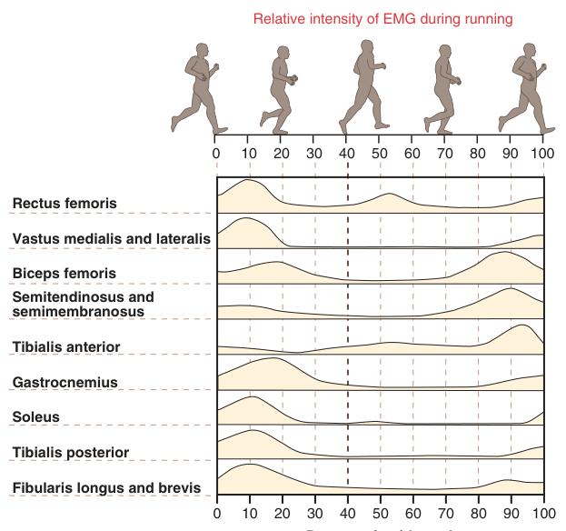
Trong pha đứng, mặt đất tác dụng lực lên người chạy thông qua bàn chân. Những lực phản ứng từ mặt đất (GRF) này đã được liên hệ với nhiều chấn thương liên quan đến chạy và là yếu tố chính được xem xét trong thiết kế giày chạy. Các lực này tác động lên và hướng về trọng tâm cơ thể của người chạy. Theo quy ước, GRF được biểu diễn dọc theo ba trục vuông góc: thẳng đứng, trước-sau và trung gian-ngang.
Lực phản ứng từ mặt đất thẳng đứng là lớn nhất, đạt đỉnh tổng thể gần 20% của chu kỳ sải chạy, với độ lớn xấp xỉ 2.5 lần trọng lượng cơ thể (Hình 16.7C và Video 16.3). Đỉnh tổng thể này, gọi là đỉnh hoạt động, liên quan đến sự kết thúc của giai đoạn đáp ứng tải trọng. Độ lớn của đỉnh hoạt động vượt quá trọng lượng cơ thể do mặt đất làm chậm chuyển động đi xuống của cơ thể.
Trước đỉnh hoạt động, một giai đoạn bổ sung chuyển sang kích hoạt đồng tâm để khởi động sự xoay ngược của khớp dưới chày cùng với cơ chế tời do sự duỗi của khớp MTP thứ nhất gây ra (xem Hình 14.40A).
Cơ chày sau hoàn toàn yên tĩnh về điện trong suốt pha đung đưa, cho đến ngay trước lần chạm đất tiếp theo.
Tương tự như cơ chày sau, fibularis longus (cơ mác dài) và fibularis brevis (cơ mác ngắn) hoạt động trong suốt pha đung đưa muộn và toàn bộ pha đứng.11,95 Đỉnh hoạt động xảy ra gần 15% của chu kỳ sải chạy, gần thời điểm lật ngoài cực đại của khớp dưới chày. Vì các cơ mác là cơ lật ngoài chính của bàn chân, có vẻ như các cơ này hoạt động đồng tâm để tạo sự lật ngoài của khớp dưới chày.
Tuy nhiên, vì lực phản ứng từ mặt đất tại thời điểm này trong chu kỳ chạy đang tạo ra mô-men lật ngoài bên ngoài tại khớp dưới chày, nhu cầu về mô-men lật ngoài bổ sung do cơ tạo ra là đáng ngờ. Do đó, có vẻ hợp lý là trong pha đứng sớm, các cơ mác hoạt động hiệp đồng với cơ chày sau để cung cấp sự ổn định trung gian-ngang cho khớp dưới chày, đồng thời làm chậm tốc độ gập lưng cổ chân.
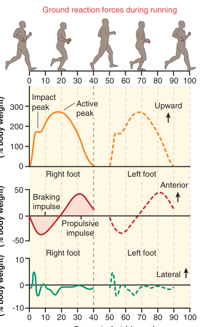
phần lớn quyết định độ lớn và hướng của lực này.
Khi chạy, bàn chân được đặt gần như ngay dưới trọng tâm cơ thể, một phần nhờ thiếu giai đoạn hai chân chịu lực.21 Tương tự như khi đi bộ, một lực phản ứng từ mặt đất hướng sang ngoài hiện diện trong 5% đầu của chu kỳ sải chạy để chống lại vận tốc hướng vào trong của bàn chân tại tiếp xúc ban đầu, sau đó một lực phản ứng từ mặt đất hướng vào trong thường hiện diện trong phần còn lại của pha đứng khi bàn chân được đặt sang ngoài trọng tâm cơ thể. Khác với đi bộ, tuy nhiên, mỗi người chạy với độ rộng bước chân hẹp hơn, sao cho bàn chân được đặt ngay dưới trọng tâm cơ thể và thậm chí có thể vượt sang phía đối diện. Độ rộng bước chân hẹp này thường thấy ở tốc độ chạy nhanh, bao gồm chạy nước rút. Khi bàn chân nằm dưới trọng tâm cơ thể, hướng của lực phản ứng từ mặt đất sẽ dao động giữa hướng vào trong và hướng sang ngoài trong suốt pha đứng. Chuyển động sang hai bên tối thiểu của trọng tâm cơ thể khi chạy gợi ý nhu cầu hạn chế về kiểm soát chủ động thăng bằng ngang.6,21 Độ rộng bước chân hẹp khi chạy giảm thiểu mô-men được tạo ra quanh trục trước-sau của trọng tâm cơ thể, từ đó giảm nỗ lực cơ cần thiết để chống lại mô-men bên ngoài này.
Kiểu tiếp đất ảnh hưởng đến đường đi của tâm áp lực (CoP) dưới bàn chân trong pha đứng.21 Đối với những người chạy dùng kiểu tiếp đất bằng gót, đường đi của CoP rất giống với đó của dáng đi bộ (xem Hình 15.32). Đường đi bắt đầu ở mặt sau-bên của mặt gan chân tại gót chân khi tiếp đất ban đầu, rồi nhanh chóng tiến về phía trước dọc theo đường giữa của bàn chân vào vùng xương đốt bàn chân vào lúc 5% của chu kỳ sải chạy.13
Trong phần còn lại của pha đứng, đường đi của CoP (tâm áp lực) tiếp tục tiến về phía trước nhưng chậm hơn, kèm theo sự dịch chuyển nhẹ về phía mặt trong của bàn chân trước trong suốt nửa sau của pha đứng và cho đến lúc nhấc gót chân.
Đường đi của CoP khác đi khi dùng các kiểu tiếp đất bằng giữa bàn chân hoặc mũi bàn chân, vì các kiểu này không liên quan đến việc gót chân chạm đất.13,21 Thay vào đó, CoP thường bắt đầu gần mặt ngoài của mặt gan chân tại xương đốt bàn chân thứ năm.
CoP tiến nhanh về phía đường giữa của bàn chân đến các cấu trúc (tức là xương, dây chằng) được thiết kế tốt hơn để chịu đựng các lực phản ứng từ mặt đất (GRF) ngày càng tăng. Không có gì đáng ngạc nhiên, trong phần còn lại của pha đứng, CoP phần lớn đi theo cùng một đường như đã mô tả cho kiểu tiếp đất bằng gót chân (rearfoot strike).
Những nguyên tắc cơ bản như nhau liên quan đến mô-men và công suất khớp nội tại trong đi bộ, như đã mô tả ở Chương 15, cũng áp dụng cho chạy. Tóm lại, các mô-men nội tại chủ yếu bắt nguồn từ các lực do cơ tạo ra và cho thấy vai trò của các cơ này trong việc điều khiển một khớp khi chạy. Công suất khớp (tích của mô-men nội tại và vận tốc góc của khớp) phản ánh tốc độ sinh hoặc hấp thụ năng lượng của các cơ băng qua khớp và cho thấy loại hoạt hóa cơ (tức là co ngắn, co dài). Diện tích dưới đường cong công suất phản ánh lượng công cơ học được thực hiện tại khớp trong một khoảng thời gian xác định, trong đó công âm đề cập đến hoạt động co dài, còn công dương thì đề cập đến hoạt động co ngắn. Ngoài ra, hãy lưu ý rằng dù các mô-men được mô tả và minh họa trong phần này được xem là “nội tại” (tức là do cơ và mô liên kết tạo ra), thì từ “nội tại” sẽ không phải lúc nào cũng được dùng.
Một đỉnh nhỏ hơn khoảng 1.5 lần trọng lượng cơ thể thường hiện diện, thường được gọi là đỉnh va chạm (impact peak). Đỉnh va chạm, thường đạt khoảng 60% của đỉnh hoạt động, xuất hiện vào khoảng 5% của chu kỳ sải chạy.
Đỉnh va chạm truyền một lực nén tức thì từ đầu xa đến đầu gần, từ chân lên đầu.29 Lực va chạm này được đặc trưng bởi độ lớn của nó, cũng như tốc độ phát triển của nó (tốc độ tải). Lực va chạm tăng lên khi chạy xuống dốc, với nhịp bước chậm hơn (cadence), và với kiểu tiếp đất bằng gót chân rõ rệt.30,36,42,47 Lực va chạm lớn thường được cho là liên quan đến các chấn thương do sử dụng quá mức ở người chạy, chẳng hạn như gãy xương do stress ở xương chày và xương đốt bàn chân.52 Tuy nhiên, cái nhìn kỹ hơn
vào các tài liệu cho thấy rằng có thể không phải độ lớn đỉnh của cú va chạm là gây hại nhất, mà đúng hơn là độ lớn của tốc độ tải (tức là độ dốc của lực thẳng đứng).128 Trên thực tế, các lực va chạm thẳng đứng điển hình mà người chạy phải chịu có thể có tác dụng sinh lý có lợi bằng cách cung cấp kích thích cho sự phát triển của sụn và xương. Những lực này thường chỉ gây hại khi kết hợp với các yếu tố bổ sung như động học chạy bất thường, thời gian chạy kéo dài, hoặc nghỉ ngơi không đủ.29
Thành phần trước-sau của GRF nhỏ hơn đáng kể so với thành phần thẳng đứng (Hình 16.7D và Video 16.3).
Trong nửa đầu của pha đứng, lực này hướng về phía sau, với diện tích dưới đường cong lực-thời gian được gọi là xung lực hãm (braking impulse). Lực hướng về phía sau này và xung lực tương ứng làm chậm CoM và giảm tốc độ tiến về phía trước của nó. Độ lớn của lực cực đại hướng về phía sau và xung lực hãm chịu ảnh hưởng lớn bởi tốc độ chạy, cũng như bởi khoảng cách ngang giữa bàn chân khi tiếp đất ban đầu và CoM. Càng xa về phía trước so với CoM, xung lực hãm càng lớn.121 Vì lý do này, nhiều người chạy đặt bàn chân gần CoM hơn khi tiếp đất ban đầu như một cách để giảm xung lực hãm. Một cách hiệu quả để làm điều này là chạy với chiều dài sải chạy được rút ngắn.
Từ giữa pha đứng đến lúc nhấc gót chân, GRF trước-sau hướng về phía trước và có tác dụng đẩy cơ thể vào pha đung đưa (xung lực đẩy). Khi chạy với vận tốc không đổi trên mặt bằng phẳng (độ dốc 0 độ), xung lực đẩy sẽ theo lý thuyết bằng xung lực hãm. Nếu một người cố tăng tốc hoặc chạy lên dốc, thì xung lực đẩy cần vượt quá xung lực hãm.
Thành phần trong-ngoài của GRF có độ lớn nhỏ nhất (tức là ít hơn 10% trọng lượng cơ thể) và thay đổi nhiều nhất giữa các cá nhân (Hình 16.7E và Video 16.4).23
Vị trí trong-ngoài của bàn chân so với CoM của cơ thể
Trong mặt phẳng sagittal, một mô-men duỗi hiện diện tại hông trong 30% đầu của chu kỳ sải chạy, chủ yếu để cung cấp sự nâng đỡ thẳng đứng cho CoM của cơ thể và để duỗi hông (Hình 16.8 và Video 16.5).9 Phần đầu của mô-men này
(0−10% của chu kỳ sải chạy) liên quan đến hấp thụ công suất, cho thấy sự hoạt hóa co dài của các cơ duỗi hông để làm chậm sự gập hông ngắn ngủi xảy ra ngay sau khi tiếp đất ban đầu. Phần còn lại của mô-men duỗi (10−30% của chu kỳ sải chạy) liên quan đến sinh công suất và sự hoạt hóa co ngắn của các cơ duỗi hông để duỗi hông, từ đó góp phần đẩy cơ thể về phía trước.
Trong giai đoạn trước pha đung đưa và pha đung đưa sớm, có một mô-men gập hông cũng tương tự gồm một giai đoạn hấp thụ công suất trước khi sinh công suất. Sự hấp thụ công suất trong giai đoạn trước pha đung đưa phản ánh sự giảm tốc của việc duỗi hông do sự hoạt hóa co dài của các cơ gập hông, cũng như sức căng thụ động được tạo ra bởi các mô liên kết khác nằm quanh hông.
Ngay sau khi nhấc gót chân và trong suốt pha đung đưa sớm, hoạt động co ngắn (concentric)
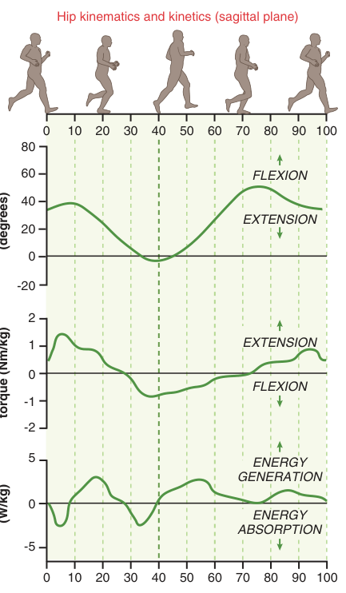
Giày chạy bộ theo truyền thống được kê đơn dựa trên tư thế bàn chân tĩnh của cá nhân. Nghĩa là, những người có cung dọc trong ở mức trung tính hoặc cao được khuyên dùng giày đệm/trung tính; những người có cung ở mức thấp vừa phải được khuyên dùng giày loại ổn định; và những người có cung quá thấp được khuyên dùng giày kiểm soát chuyển động.
Tuy nhiên, tính phù hợp về lâm sàng của thuật toán này đã bị thách thức do thiếu bằng chứng khoa học.98 Thực tế, một thử nghiệm lâm sàng ngẫu nhiên đã kết luận rằng quy ước hiện hành trong kê đơn giày chạy bộ là không phù hợp.100 Cụ thể hơn, nghiên cứu đã phát hiện rằng những người chạy có kiểu bàn chân trung tính có thể được lợi hơn từ giày hạng ổn định so với giày trung tính, vì ít đau liên quan đến chạy và ít ngày tập luyện bị bỏ lỡ hơn được ghi nhận ở những người dùng giày ổn định.
Hơn nữa, nghiên cứu không thể ủng hộ việc sử dụng giày kiểm soát chuyển động ở những người chạy có bàn chân xoay trong quá mức.
Các nghiên cứu quy mô lớn liên quan đến các nhánh của quân đội Hoa Kỳ đã cung cấp thêm bằng chứng để đặt câu hỏi về các quy trình kê đơn giày chạy hiện hành.56-59 Trong các nghiên cứu này, tân binh được phân ngẫu nhiên đi một loại giày phù hợp với tư thế bàn chân tĩnh của họ (giày đệm/trung tính cho cung cao; giày ổn định cho cung trung bình; giày kiểm soát chuyển động cho cung thấp) hoặc một loại giày ổn định bất kể tư thế bàn chân. Không có sự khác biệt về tỷ lệ chấn thương được ghi nhận giữa các nhóm trong 12 tuần huấn luyện cơ bản tiếp theo.
Các nghiên cứu tiến cứu này cung cấp bằng chứng mạnh mẽ cho thấy việc kê đơn giày chạy dựa trên tư thế bàn chân có rất ít ảnh hưởng đến nguy cơ chấn thương. Vì vậy, nếu mục tiêu là phòng ngừa chấn thương khi chạy, thì chiến lược lựa chọn cực kỳ phổ biến này là có khiếm khuyết.
Dù hiện chưa có thuật toán nào được xác thực để xác định chiếc giày phù hợp cho một cá nhân nhằm giảm thiểu nguy cơ chấn thương trong khi vẫn duy trì hoặc cải thiện hiệu suất, nhiều người đã đề xuất rằng cảm nhận về sự thoải mái của người chạy có thể là một
yếu tố quyết định.78-80,83,84 Nghĩa là, chiếc giày mà một cá nhân nhận thấy là thoải mái khi đi trong lúc chạy nên có các đặc tính sinh cơ học phù hợp với người đó. Đối với những người có chấn thương liên quan đến chạy, không có bằng chứng mạnh mẽ
nào ủng hộ hoặc mâu thuẫn với cách tiếp cận lâm sàng thường dùng trong kê đơn loại giày dựa trên tư thế bàn chân, và do đó cách tiếp cận này có thể vẫn cần được xem xét.
Mô-men và công suất khớp cung cấp nhiều hiểu biết sâu sắc về sinh cơ học của chạy, đặc biệt khi được dùng kết hợp với động học khớp và dữ liệu điện cơ đồ (EMG). Cần lưu ý rằng mô-men và công suất khớp không phản ánh đóng góp và chức năng của từng cơ riêng lẻ, mà của tất cả các cơ (và mô liên kết) băng qua khớp đang xét. Việc xác định đóng góp riêng lẻ đòi hỏi các mô hình thần kinh-cơ-xương phức tạp thường liên quan đến dữ liệu về sự kích thích cơ, sự hoạt hóa
động lực, cơ học co của phức hợp cơ-gân, và gia tốc của các đoạn cơ thể.34,44,91,116
trong suốt giai đoạn trước pha đung đưa và toàn bộ pha đung đưa. Cần chỉ ra rằng các dữ liệu đã công bố về mặt phẳng ngang của hông khá khác biệt giữa các ấn phẩm, chủ yếu do độ lớn nhỏ của chúng, khó khăn trong đo lường chính xác động học, và phương pháp
xử lý dữ liệu.19,34,37,47
Trong mặt phẳng sagittal, một mô-men gập rất ngắn hiện diện tại gối trong 5% đầu của chu kỳ sải chạy và liên quan đến sinh công suất (Hình 16.11 và Video 16.5). Điều này cho thấy các cơ gập gối hoạt động co ngắn trong và ngay sau khi tiếp đất ban đầu, có lẽ để đảm bảo gối được đặt ở tư thế gập nhằm hấp thụ chấn động va chạm. Một mô-men duỗi gối lớn hơn nhiều chiếm ưu thế trong hầu hết pha đứng, từ 5% đến 30% của chu kỳ sải chạy. Trong giai đoạn hấp thụ tải (loading response), mô-men duỗi này liên quan đến sự hấp thụ công suất đáng kể để kiểm soát sự gập gối, và đã được cho là nguồn gốc của đau gối mạn tính và đau khớp xương bánh chè-đùi ở người chạy đường dài.47
Mô-men duỗi gối quyết định độ lớn của tải trọng tại khớp xương bánh chè-đùi: khi mô-men duỗi tăng, lực tiếp xúc và ứng suất tại khớp xương bánh chè-đùi cũng tăng theo.63,65 Các chiến lược huấn luyện lại chạy cần thiết để đưa chi về phía trước. Trong giai đoạn cuối của pha đung đưa, cần một mô-men duỗi hông để làm chậm sự gập hông và bắt đầu duỗi hông nhằm chuẩn bị cho cú tiếp đất sắp tới.
Trong mặt phẳng frontal (trán), một mô-men dạng ngoại hông lớn hiện diện trong suốt pha đứng, đạt một đỉnh duy nhất gần giữa pha đứng (Hình 16.9 và Video 16.6). Sự hấp thụ công suất hiện diện trong phần đầu của mô-men này, cho thấy sự hoạt hóa co dài của các cơ dạng ngoại hông nhằm làm chậm và kiểm soát sự khép hông và sự hạ thấp tương ứng của phía đối bên của khung chậu.
Phần còn lại của mô-men này liên quan đến hoạt động co ngắn của các cơ dạng ngoại hông để nâng phía đối bên của khung chậu và dạng ngoại hông. Trong suốt pha đung đưa, mô-men và công suất hông trong mặt phẳng frontal về cơ bản bằng không.
Trong mặt phẳng ngang, một mô-men xoay trong hiện diện tại hông trong 30% đầu của chu kỳ sải chạy (Hình
16.10).37,54,99,106,111 Độ lớn đỉnh của mô-men nội tại này tương đối nhỏ, chưa tới 30% các mô-men được tạo ra trong mặt phẳng sagittal và frontal. Sự sinh công suất hiện diện, cho thấy
hoạt động co ngắn của các cơ xoay trong hông để đưa phía đối bên của khung chậu về phía trước. Giống như mặt phẳng frontal, mô-men và công suất hông trong mặt phẳng ngang về cơ bản bằng không.
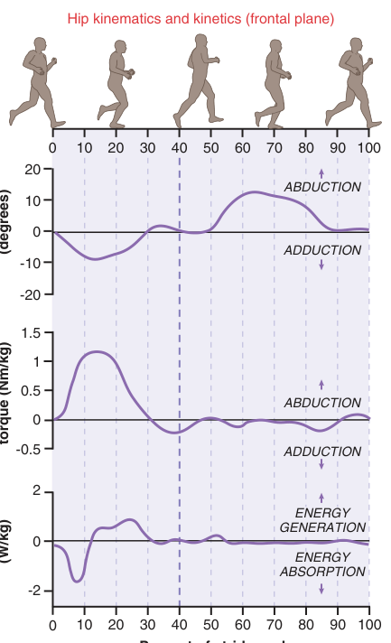
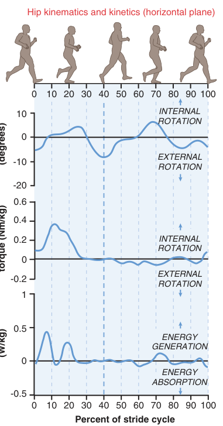
chuyển động tối thiểu trong mặt phẳng frontal sẵn có tại gối. Dù độ lớn đỉnh của mô-men dạng ngoại gối chỉ khoảng 30% mô-men đỉnh trong mặt phẳng sagittal, nó đã được liên quan đến đau khớp xương bánh chè-đùi ở người chạy.112 Chạy với một sự tăng nhẹ về độ rộng bước chân có thể làm giảm mô-men dạng ngoại gối và từ đó có thể giảm triệu chứng ở người chạy bị đau xương bánh chè-đùi.14 Trong pha đung đưa, mô-men và công suất trong mặt phẳng frontal duy trì gần bằng không.
Trong mặt phẳng ngang, mô-men và công suất khớp gối khá nhỏ và thay đổi. Nhìn chung, một mô-men xoay ngoài hiện diện trong suốt pha đứng và liên quan đến một đường cong công suất mà
duy trì gần bằng không.37,73
Trong mặt phẳng sagittal, một mô-men gập bàn chân (plantar flexion) hiện diện trong suốt pha đứng khi chạy (Hình 16.12 và Video 16.5). Cho đến giữa pha đứng, các cơ gập bàn chân hoạt động co dài để kiểm soát xương chày tiến về phía trước qua bàn chân. Trong nửa sau của pha đứng đã được đề xuất nhằm giảm mô-men duỗi gối ở người chạy bị đau gối mạn tính bằng cách thay đổi các yếu tố động học liên quan. Cụ thể là, sải chạy ngắn hơn, gập gối đỉnh ít hơn
trong pha đứng, hoặc tăng góc gập thân trung bình, mỗi cách đã được khuyến nghị nhằm giảm yêu cầu đặt lên cơ tứ đầu đùi (quadriceps) và ứng suất khớp xương bánh chè-đùi phát sinh.47,65,115 Từ cuối giai đoạn hấp thụ tải đến đầu giai đoạn trước pha đung đưa,
các cơ duỗi gối hoạt động co ngắn để duỗi gối và nâng đỡ CoM theo phương thẳng đứng. Trong pha đung đưa, một mô-men duỗi nhỏ hiện diện tại gối trong pha đung đưa sớm để làm chậm sự gập gối, trong khi một mô-men gập rõ rệt hơn xuất hiện trong giai đoạn cuối của pha đung đưa chủ yếu để làm chậm và kiểm soát mức độ duỗi gối. Ngay tại cuối giai đoạn đung đưa muộn, chính mô-men gập này sinh công suất để định vị gối cho cú tiếp đất tiếp theo.
Trong mặt phẳng frontal, một mô-men dạng ngoại (nội tại) thường hiện diện tại gối trong pha đứng. Mô-men này cần thiết để cân bằng mô-men khép (ngoại tại), do GRF đi qua phía trong của gối (Video 16.7). Đường cong công suất thay đổi trong suốt pha đứng, dao động giữa sinh và hấp thụ, và có độ lớn tương đối nhỏ do
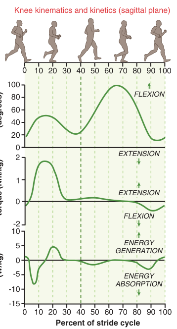
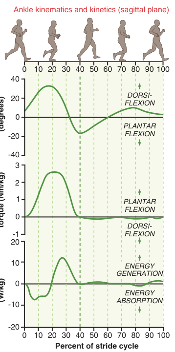
Nói chung, nữ giới thể hiện các chuyển động trong mặt phẳng frontal và ngang lớn hơn nam giới khi chạy. Cụ thể, nữ giới có xoay trong và khép hông đỉnh lớn hơn,26,37 cũng như dạng ngoại gối đỉnh lớn hơn.37,69 Nữ giới cũng thể hiện
sự hấp thụ công suất lớn hơn tại hông trong các mặt phẳng frontal và ngang so với nam giới.37 Sự gia tăng này về chuyển động và hấp thụ công suất ngoài mặt phẳng sagittal đã được cho là góp phần vào nguy cơ đau khớp xương bánh chè-đùi và hội chứng dải chậu-chày (iliotibial band syndrome) ở nữ giới.
Cường độ tín hiệu điện cơ đồ (EMG) của gluteus maximus (cơ mông lớn) ở nữ giới (chuẩn hóa theo hoạt động cơ trung bình trong chu kỳ sải chạy) xấp xỉ gấp đôi nam giới khi chạy ở cùng tốc độ.26 Hơn nữa, nữ giới thể hiện sự gia tăng lớn hơn về gluteus medius (cơ mông trung)
và vastus lateralis (cơ rộng ngoài) so với nam giới khi tốc độ chạy hoặc độ dốc mặt tiếp xúc tăng.26 Phản ứng đặc thù theo giới tính của các cơ này đối với thay đổi về tốc độ và độ dốc mặt tiếp xúc phù hợp với quan điểm rằng khi độ thách thức của nhiệm vụ tăng, nam và nữ sử dụng các chiến lược thần kinh-cơ khác nhau. Những khác biệt liên quan đến giới tính trong hoạt động thần kinh-cơ có thể góp phần vào hiệu suất và nguy cơ chấn thương, và vẫn là một lĩnh vực nghiên cứu sôi động.
Tốc độ có ảnh hưởng đáng kể đến cả động học và động lực học của chạy. Khi tốc độ chạy tăng, cả chiều dài sải chạy và tần số sải chạy đều tăng.15,22 Một sự thay đổi lớn hơn được quan sát thấy ở chiều dài sải chạy ở những tốc độ phổ biến hơn trong chạy đường dài (2 m/sec đến 5 m/sec), trong khi các thay đổi về tần số sải chạy chủ yếu xảy ra trong chạy tốc độ cao và chạy nước rút (7.0 m/sec đến 9.0 m/sec).107 Lượng thời gian mà bàn chân tiếp xúc với mặt đất giảm đi khi tốc độ chạy tăng, phản ánh sự gia tăng độ cứng dựa trên cơ trong suốt chi dưới.4,36 Các GRF tăng lên theo tốc độ chạy, với mức tăng lớn nhất thường được quan sát ở các tốc độ dưới cực đại.12 Ví dụ, GRF thẳng đứng
tăng 15% từ 40% đến 60% tốc độ tối đa, trong khi chỉ tăng 3% từ 60% đến 100% tốc độ tối đa.15 Các mô-men khớp trong mặt phẳng sagittal cho thấy mối quan hệ tương tự với tốc độ chạy: mức tăng lớn nhất ở gối và cổ chân trong pha đứng xảy ra khi tăng từ một tốc độ dưới cực đại (40%) lên tốc độ khác (60%).106 Các mô hình cơ-xương cho thấy rằng trong chạy ở tốc độ chậm đến trung bình, gastrocnemius (cơ bắp chân) và soleus (cơ bắp chân sâu) chịu trách nhiệm cho một phần đáng kể của GRF thẳng đứng và gần như toàn bộ xung lực đẩy về phía trước từ GRF trước-sau. Tuy nhiên, khi tốc độ chạy tiến gần mức tối đa, các mô-men khớp trong pha đung đưa tiếp tục tăng đáng kể, đặc biệt là gập hông trong pha đung đưa sớm và duỗi hông cùng gập gối trong giai đoạn cuối của pha đung đưa.107 Vì vậy, chạy nước rút đòi hỏi công suất đáng kể từ iliopsoas (cơ chậu-thắt lưng), gluteus maximus (cơ mông lớn), và nhóm cơ khao (hamstrings).
So với chạy trên mặt bằng phẳng, đỉnh va chạm và tốc độ tải của GRF thẳng đứng tăng lên khi chạy xuống dốc và giảm đi khi chạy lên dốc. Ví dụ, đỉnh va chạm tăng 32% khi chạy trên mặt tiếp xúc dốc xuống 6 độ và giảm 22% khi chạy trên mặt tiếp xúc dốc lên 6 độ.42 Điều này được cho là một phần do thay đổi kiểu tiếp đất, với pha giữa bàn chân, các cơ gập bàn chân thể hiện hoạt động co ngắn và là nguồn sinh công suất chính dùng để đẩy về phía trước.
Trong tổng công suất được sinh ra trong nửa sau của pha đứng, 55% đến từ cổ chân so với 35% từ gối và 10% từ hông.47 Trong pha đung đưa sớm, một mô-men gập mu bàn chân nhỏ hiện diện để khởi động sự gập mu bàn chân của cổ chân sau khi nhấc gót chân và giúp bàn chân vượt qua mặt đất khi chi đung đưa về phía trước.
Trong suốt phần còn lại của pha đung đưa, mô-men và công suất khớp cổ chân duy trì gần bằng không.
Dù Hình 16.12B cho thấy không có mô-men gập mu bàn chân nào thường xảy ra trong giai đoạn hấp thụ tải, một số người sẽ thể hiện một mô-men gập mu bàn chân nhỏ ngay sau khi tiếp đất ban đầu để kiểm soát sự hạ thấp của bàn chân trước xuống mặt đất. Điều này khá đáp ứng động lực học không điển hình có xu hướng xảy ra ở người chạy dùng kiểu tiếp đất bằng gót chân với cú tiếp đất ban đầu xảy ra ở mặt sau cùng của bàn chân. Dù độ lớn tương đối nhỏ, mô-men gập mu bàn chân này đã được liên quan đến hội chứng khoang gắng sức trước (anterior exertional compartment syndrome) ở người chạy. Việc loại bỏ mô-men gập mu bàn chân này bằng cách chuyển sang kiểu tiếp đất bằng mũi bàn chân có thể giảm triệu chứng ở người chạy bị tình trạng này.31 Trong các mặt phẳng frontal và ngang, mô-men và công suất của vùng cổ chân-bàn chân rất nhỏ và thay đổi trong khi chạy. Trong mặt phẳng frontal, sự thay đổi này có thể liên quan đến quy ước mà theo đó các mô-men được định nghĩa và từ đó được tính toán.89 Tuy nhiên, một mô-men lật trong nhỏ thường hiện diện trong nửa đầu của pha đứng, với các cơ lật trong khớp dưới sào (subtalar) hoạt động co dài để kiểm soát sự lật ngoài của khớp dưới sào. Động lực học mặt phẳng ngang hiếm khi được báo cáo ở vùng cổ chân-bàn chân.
Người chạy lớn tuổi và trẻ tuổi cho thấy những khác biệt nhất quán về cơ học chạy. Khác biệt phổ biến nhất là giảm tốc độ chạy ưa thích.28 Tuy nhiên, khi người chạy lớn tuổi và trẻ tuổi được yêu cầu chạy ở cùng tốc độ, một số khác biệt sinh cơ học vẫn tồn tại. Ví dụ, nam người chạy lớn tuổi trong độ tuổi 55−65 chạy với bước chân ngắn hơn và nhịp bước cao hơn so với người trẻ hơn (20−35 tuổi) của họ.17 Những khác biệt tương tự được quan sát ở người chạy trong độ tuổi 60−69, ngoài việc giảm thời gian bay (float time) và độ dịch chuyển thẳng đứng của CoM cơ thể ở nhóm lớn tuổi đó.53 Dù có những khác biệt này về đặc điểm không gian-thời gian, người chạy lớn tuổi thể hiện đỉnh va chạm và tốc độ tải GRF thẳng đứng lớn hơn, và
đỉnh hoạt động lớn hơn, cho thấy sự mất khả năng hấp thụ chấn động và khả năng tăng tính dễ tổn thương ở chi dưới.17,53,67 Dù các mô-men khớp gối nhìn chung tương tự về độ
lớn giữa các nhóm tuổi, người chạy lớn tuổi nhất quán cho thấy giảm mô-men gập bàn chân đỉnh tại cổ chân và sinh công suất tại cổ chân. Không có gì đáng ngạc nhiên, các chấn thương liên quan đến cơ bắp chân và gân Achilles khá phổ biến ở người chạy lớn tuổi.
cũng được ghi nhận sự gia tăng đáng kể mô-men khép gối (ngoại tại) ở nữ người chạy lớn tuổi, gợi ý nguy cơ gia tăng phát triển viêm xương khớp gối phía trong hoặc các tình trạng tương tự.67 Nguyên nhân của những ảnh hưởng liên quan đến tuổi này chưa rõ, nhưng có thể liên quan đến thay đổi về đặc tính mô, khả năng thần kinh-cơ, hoặc chi phí chuyển hóa.
Tiếp đất ban đầu với mặt đất khi chạy có thể xảy ra ở gót chân, giữa bàn chân, hoặc mũi bàn chân, trong đó điểm tiếp đất ảnh hưởng phần lớn đến động học khớp tiếp theo của chi dưới, đặc biệt là ở gối và cổ chân. Tóm lại, kiểu tiếp đất bằng mũi bàn chân liên quan đến gập gối và gập bàn chân tại cổ chân nhiều hơn khi tiếp đất ban đầu so với kiểu tiếp đất bằng gót chân. Chương này nhấn mạnh kiểu tiếp đất bằng gót chân vì nó phổ biến nhất, và mô tả các chuyển động xoay của hông, gối và cổ chân trong cả ba mặt phẳng chính của chuyển động trong suốt chu kỳ sải chạy. Động học tương ứng của thân, khung chậu và chi trên cũng được mô tả.
Các chuyển động xoay khớp phối hợp giúp kiểm soát sự dịch chuyển của CoM cơ thể. Khi chạy, CoM có độ cao tối thiểu ở giữa pha đứng và độ cao tối đa trong giữa giai đoạn bay ở pha đung đưa sớm. Điều này dẫn đến năng lượng thế và năng lượng động học cùng pha; do đó việc bảo tồn năng lượng cơ học phụ thuộc nhiều hơn vào tính chất đàn hồi như lò xo của các mô, chẳng hạn như gân Achilles. Khác với đi bộ, chi phí năng lượng chuyển hóa để chạy một quãng đường nhất định khá tương tự bất kể tốc độ. Dù cơ chế của sự tiết kiệm chuyển động này chưa rõ, các điều chỉnh về động học khớp, nguồn công suất cơ học, và thay đổi về hoạt động cơ là những yếu tố tiềm năng.
Một số cơ hoạt động co dài trong một phần hoặc toàn bộ giai đoạn hấp thụ tải của chu kỳ sải chạy để làm chậm CoM và các chuyển động khớp liên quan. Ví dụ, gluteus maximus (cơ mông lớn), vastus medialis (cơ rộng trong), vastus lateralis (cơ rộng ngoài), gastrocnemius (cơ bắp chân), và soleus (cơ bắp chân sâu) đều hoạt động theo cách này. Hoạt động co dài của các cơ gập bàn chân tại cổ chân và sự kéo dài tương ứng của gân Achilles dẫn đến tích trữ năng lượng, sau đó được giải phóng trong hoạt động co ngắn của chính các cơ này trong nửa sau của pha đứng. Kiểu hoạt động co dài trước hoạt động co ngắn, hay hấp thụ công suất trước sinh công suất, thường gặp khi chạy và dẫn đến tăng cường lực trong hành động cơ co ngắn và cải thiện hiệu suất cơ. Ví dụ, iliopsoas (cơ chậu-thắt lưng) hoạt động co dài trước khi nhấc gót chân rồi hoạt động co ngắn trong pha đung đưa sớm để trước tiên làm chậm duỗi hông rồi bắt đầu gập hông và đưa chi về phía trước. Tương tự, nhóm cơ khao (hamstrings)
hoạt động co dài trong phần đầu của giai đoạn đung đưa muộn (75% đến 90% của chu kỳ sải chạy) để làm chậm gập gối, rồi hoạt động co ngắn trong phần còn lại của pha đung đưa để định vị chi cho cú tiếp đất ban đầu tiếp theo. Việc có sự đánh giá và hiểu biết ở mức độ chi tiết này là thiết yếu để chẩn đoán và điều trị hiệu quả các rối loạn vận động và cơ học bệnh lý liên quan.
Chạy là một trong những hoạt động tập luyện phổ biến nhất trên toàn thế giới, và là một động tác không thể thiếu trong nhiều môn thể thao.
Dù chạy có thể mang lại lợi ích sức khỏe rất quý giá cho nhiều hệ thống của cơ thể, tỷ lệ mắc mới hàng năm của chấn thương cơ-xương liên quan đến chạy dao động từ 26% đến 92% và là lĩnh vực nghiên cứu liên tục của các bác sĩ lâm sàng và nhà nghiên cứu.118 Một yếu tố có thể góp phần làm tăng nguy cơ chấn thương và làm chậm hoặc ngăn cản hồi phục là cơ học chạy của mỗi cá nhân. Vì vậy, hiểu biết về cơ học chạy là thiết yếu trong quản lý thành công những người có chấn thương liên quan đến chạy. Kiến thức về các GRF điển hình, động học và động lực học khớp, cùng các kiểu hoạt động cơ giúp bác sĩ lâm sàng suy ra loại và mức độ tải trọng lên mô, cũng như các yếu tố này liên quan thế nào đến nguy cơ chấn thương và hồi phục. Điều này cũng cung cấp cơ sở để so sánh khi thực hiện phân tích lâm sàng về cơ học chạy của một cá nhân.
kiểu tiếp đất trở nên phổ biến hơn khi chạy trên mặt tiếp xúc dốc hơn 3 độ. Đỉnh hoạt động của GRF thẳng đứng, tuy nhiên, dường như không đổi qua các độ dốc mặt tiếp xúc, ít nhất là đến độ dốc/đốc 9 độ.
Các GRF được tạo ra song song với mặt chạy, đặc biệt là thành phần trước-sau, cho thấy nhạy cảm hơn với thay đổi theo độ dốc. Như có thể mong đợi, xung lực hãm tăng lên khi chạy xuống dốc, trong khi xung lực đẩy tăng lên khi chạy lên dốc. Chạy trên mặt dốc xuống 9 độ làm tăng hơn gấp đôi xung lực hãm so với chạy trên mặt bằng, trong khi mặt dốc lên 9 độ đòi hỏi tăng 65% xung lực đẩy để duy trì tốc độ chạy không đổi.42 Sự gia tăng xung lực hãm trong chạy xuống dốc lớn hơn sự giảm tương ứng của xung lực đẩy. Trong chạy lên dốc, tuy nhiên, sự giảm xung lực hãm gần như giống hệt sự gia tăng xung lực đẩy.
Sự kết hợp giữa đỉnh va chạm và tốc độ tải GRF thẳng đứng tăng lên, cũng như xung lực hãm, cho thấy chạy xuống dốc làm tăng nguy cơ chấn thương. Vì vậy, nhìn chung người ta khuyên nên tránh chạy xuống dốc trong vài tuần khi trở lại chạy sau một chấn thương, chẳng hạn như gãy xương chày do stress.
Người ta thường cho rằng đỉnh va chạm của GRF thẳng đứng giảm khi chạy trên mặt tiếp xúc êm hơn như cỏ. Tuy nhiên, các đỉnh va chạm nhìn chung tương tự nhau khi chạy trên các mặt tiếp xúc có tính chất cơ học khác nhau.32,85 Điều này phần lớn là do các điều chỉnh tương ứng trong cơ học khớp để bù cho độ cứng của mặt tiếp xúc. Nhìn chung, một tư thế chi dưới ít cứng hơn khi tiếp đất ban đầu sẽ được dùng khi chạy trên mặt tiếp xúc cứng.39 Ví dụ, khi chạy trên mặt tiếp xúc cứng (ví dụ, nhựa đường), người chạy có thể áp dụng gập gối lớn hơn khi tiếp đất ban đầu để giảm độ cứng của chi dưới. Một điều chỉnh động học phổ biến khác có thể bao gồm dùng kiểu tiếp đất bằng giữa bàn chân hoặc mũi bàn chân thay vì kiểu tiếp đất bằng gót chân. Dù có vẻ như có sự đáp ứng mang tính cá nhân đáng kể về cách các góc khớp và mô-men được điều chỉnh theo độ cứng mặt tiếp xúc,32 chuyển động của CoM và thời gian tiếp xúc mặt đất vẫn không bị ảnh hưởng.39 Khả năng nhanh chóng
điều chỉnh độ cứng của chi dưới giúp người chạy chạy tương tự trên nhiều bề mặt khác nhau.38 Tóm tắt: Chạy là một chuyển động phức tạp, phối hợp đòi hỏi sự tích hợp tinh vi chức năng thần kinh-cơ trên toàn bộ cơ thể. Với mục tiêu khá đơn giản là tiến về phía trước nhanh hơn, chạy thành công đòi hỏi vừa đủ hoạt động cơ để kiểm soát và tạo ra chuyển động khớp trong cả ba mặt phẳng, nhưng không quá mức đến mức gây tiêu hao chuyển hóa quá mức. Trong chương này, vận động học của việc chạy được khám phá để cung cấp cho người đọc các chi tiết và hiểu biết sâu sắc nhằm bắt đầu hiểu được điều này được thực hiện như thế nào.
Trong khi chạy, mỗi chi dành nhiều thời gian trên không hơn là trên mặt đất, với pha đung đưa chiếm khoảng 60% hoặc hơn của chu kỳ sải chạy. Khi tốc độ chạy tăng lên, thời gian của pha đung đưa cũng tăng theo, chủ yếu là do sự gia tăng thời gian dành cho giai đoạn lơ lửng. Phần này của pha đung đưa (tức là giai đoạn lơ lửng) khi cả hai chi đều rời khỏi mặt đất là đặc điểm phân biệt then chốt để xác định liệu một người có đang chạy hay chỉ đang đi bộ nhanh.
Khoảng 50% trong tổng số các chấn thương liên quan đến chạy xảy ra tại gối, với gần một nửa trong số đó có liên quan đến khớp bánh chè-đùi.114 Mặc dù một số yếu tố nguy cơ gây đau khớp bánh chè-đùi đã được đề xuất,118,120 nhưng khả năng của các khớp chi dưới trong việc
kiểm soát đầy đủ các tải trọng áp dụng trong giai đoạn tiếp nhận tải thường được xác định.45,47,87 Đánh giá cơ học chạy ở một người bị đau khớp bánh chè-đùi có thể cho thấy việc sử dụng chiều dài sải quá mức
hoặc một tư thế gối valgus động (do khép hông quá mức và xoay trong), cả hai đều liên quan đến tải trọng tăng lên tại khớp.47,87 Bởi vì các phép đo căn chỉnh gối tĩnh như góc Q không tạo được sự tương quan chặt chẽ
với sự vẹo gối động,48,92 yếu tố đóng góp chính dường như là sự kiểm soát thần kinh-cơ bị thay đổi. Ví dụ, những người bị đau bánh chè-đùi đã cho thấy sự kết hợp giữa khởi phát chậm hơn và thời gian hoạt động ngắn hơn của gluteus medius (cơ mông trung)
trong khi chạy so với những người không bị đau bánh chè-đùi; không có sự khác biệt về biên độ hoạt động cơ nào được ghi nhận.124 Những phát hiện này ủng hộ quan điểm lâm sàng cho rằng việc giảm kích hoạt các cơ dạng hông có liên quan về mặt sinh cơ học đến việc kiểm soát hông kém đi và do đó là chuyển động của gối (Chương 13).
Các chương trình điều trị bảo tồn cho đau khớp bánh chè-đùi ở người chạy tập trung vào tập kháng lực cho cơ vùng hông, đặc biệt là các cơ dạng hông. Việc này mang lại mức giảm đau lớn hơn và cải thiện chức năng tốt hơn so với trường hợp các bài tập này bị
bỏ qua.8,33,55,82,117 Các bài tập kiểm soát vận động nhằm khuyến khích động học khớp phù hợp cũng là một khía cạnh không thể thiếu của quá trình hồi phục, vì chỉ tập sức mạnh thôi có thể chưa đủ để thay đổi cơ học chạy bất thường.46,126
Huấn luyện lại cơ học chạy bằng phản hồi sinh học là một can thiệp mới nổi trong điều trị đau khớp bánh chè-đùi ở người chạy.45 Phản hồi theo thời gian thực về chuyển động hông đã mang lại những cải thiện về sinh cơ học chạy và quan trọng hơn là đã dẫn đến sự gần như hết triệu chứng.87 Ví dụ, việc quan sát động học mặt phẳng frontal của hông trong khi chạy giúp những người bị đau bánh chè-đùi giảm khép hông đỉnh trong pha đứng, hy vọng tạo điều kiện cho một sự thay đổi bền vững hơn trong kiểu kiểm soát vận động của họ.127 Các chiến lược huấn luyện lại bổ sung đã tập trung vào các biện pháp khác có thể giảm lực khớp bánh chè-đùi trong giai đoạn tiếp nhận tải. Chạy với nhịp bước tăng 10% làm giảm hiệu quả lực khớp bánh chè-đùi đỉnh gặp phải trong pha đứng là 14%.65 Sự giảm lực khớp này và sự hấp thụ công suất khớp gối tương ứng chủ yếu bắt nguồn từ sự phối hợp cơ bị thay đổi, làm giảm lượng gập gối ở giữa pha đứng. Chạy với sự tăng nhẹ gập thân có thể có tác dụng tương tự khi cánh tay đòn mô-men của GRF tại gối được giảm đi.115 Việc quản lý lâm sàng đau khớp bánh chè-đùi ở người chạy đã phát triển trong những thập kỷ gần đây, phần lớn nhờ sự hiểu biết sâu hơn của chúng ta về vận động học của chạy. Việc tích hợp kiến thức này vào thực hành lâm sàng cho phép phát triển các chiến lược hiệu quả hơn để đạt được sự hết triệu chứng.
Đáp án cho các câu hỏi nghiên cứu có thể được tìm thấy trên trang web Evolve.
TẤT CẢ VIDEO của chương này có thể được truy cập bằng cách quét mã QR nằm ở bên phải.